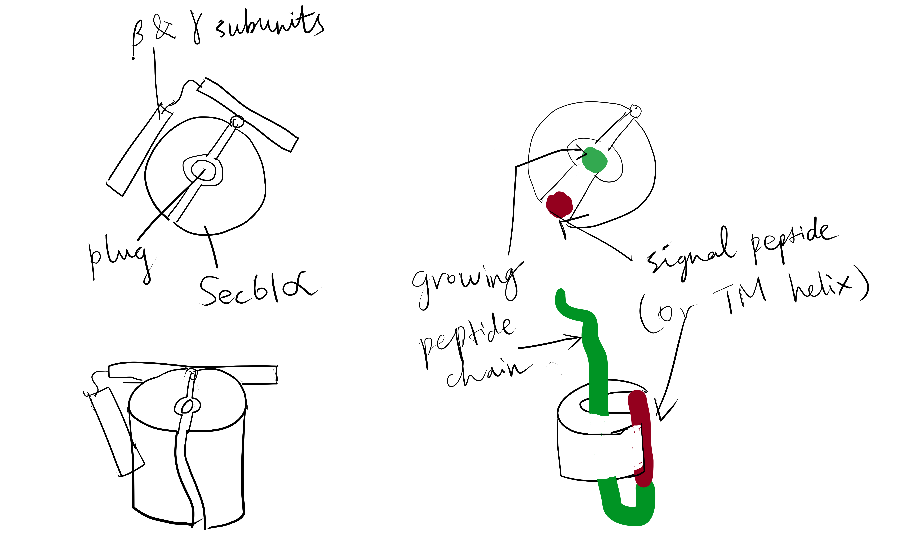
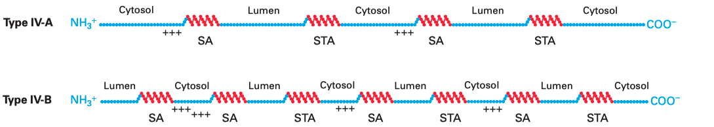
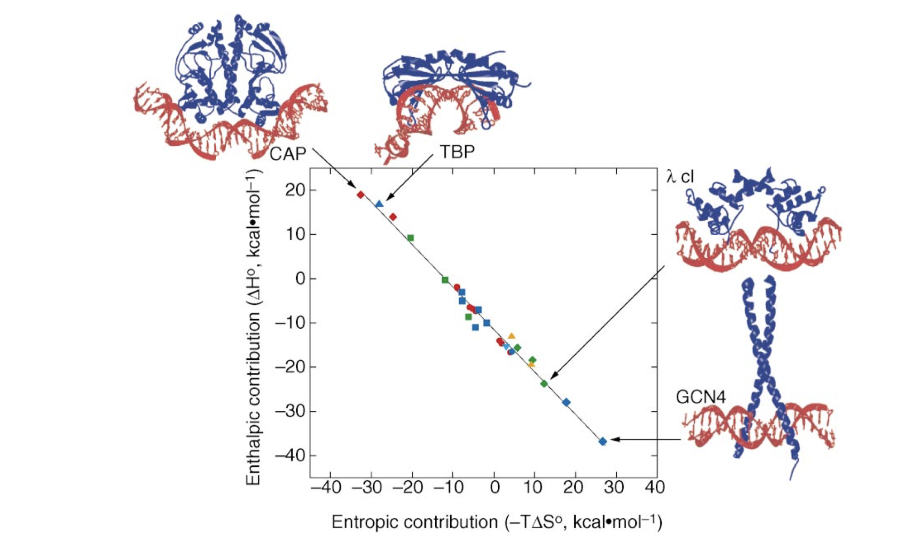
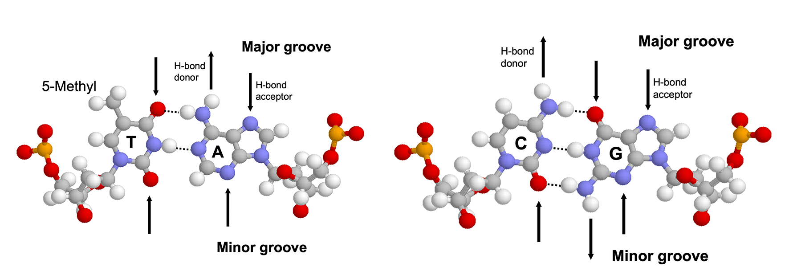
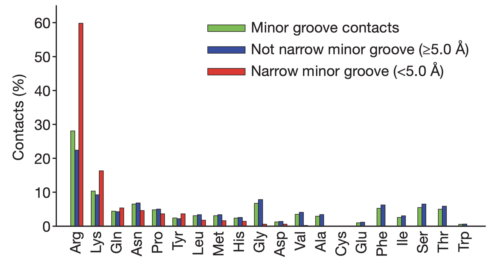
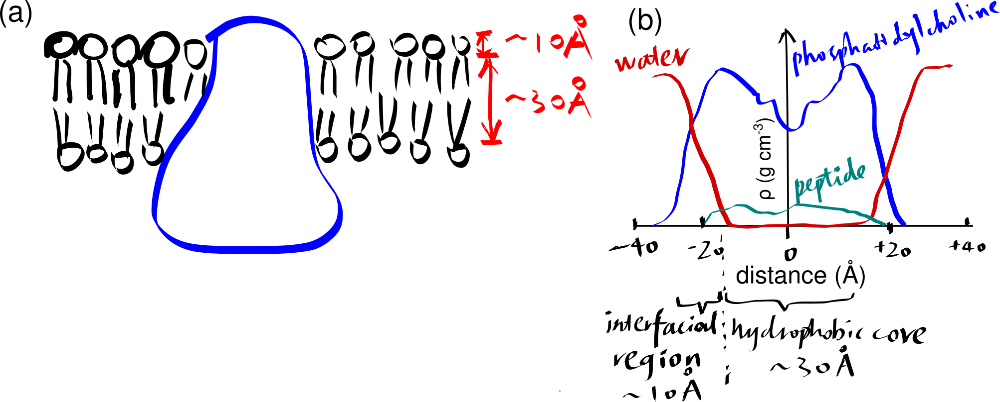
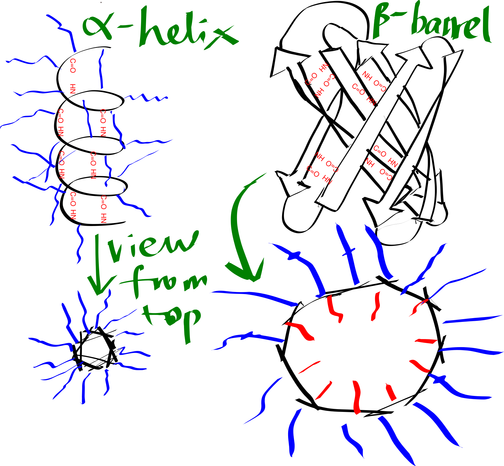
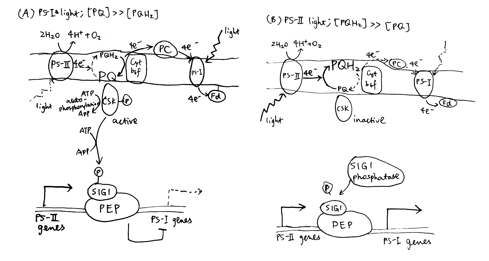
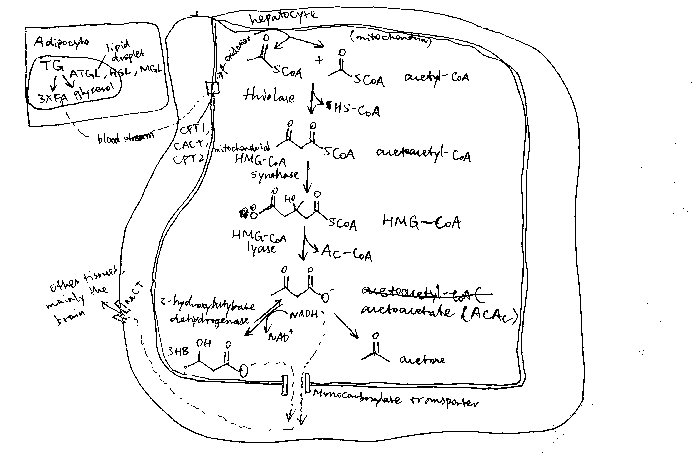

2020
The majority of integral membrane proteins in an eukaryotic cell are made of one or more \(\alpha\)-helices and are first inserted co-translationally via the Sec61 translocon into the endoplasmic reticulum (ER) membrane, assembled there, and then dispatched, via the golgi apparatus and vesicles, to their final destinations. Bacteria use the SecYEG translocon, which is a homolog of Sec61, to insert membrane proteins into their plasma membrane. There are also translocons specific to chroloplasts (TIC-TOC), mitochondria (TIM-TOM) and peroxisomes (PEX), but this essay will focus on the Sec61 translocon.
1 Targeting the Protein to the ER Membrane: SRP and the Sec61 Translocon
The common co-translationally inserted membrane proteins are targeted to the Sec61 translocon on the ER membrane via the cytosolic signal recognition particle (SRP) and the SRP receptor near the translocon.
SRP is a ribonucleoprotein particle made up of 6 proteins bound to a 300-nucleotide RNA acting as a scaffold. The M and Alu domains of SRP are critical for its functions. The M domain contains a cleft whose inner surface is lined by methionine and other hydrophobic side chains. This cleft binds to a hydrophobic segment of the nascent peptide as soon as it emerges from the exit tunnel. Meanwhile, the Alu domain blocks the elongation factor 2 (eEF2) binding site on the ribosome, pausing translation.
Usually it is the first hydrophobic segment that is recognised by SRP. This segment can either be a pure ER-targeting signal sequence or be the first TM helix itself (see next section). Recognition by SRP not only serves to target the ribosome-nascent protein to the ER but also prevents exposure of the hydrophobic segment to the aqueous environment.
SRP and SRP receptor each has a GTP binding site. When their GTP-bound forms associate with each other, they form two GTPase active sites. The GTPase activity is inhibited by signal peptide binding. Once the nascent chain has left SRP and enters the translocon, the two GTP molecules are hydrolysed, causing dissociation of SRP and its receptor. GTP replaces GDP on both proteins, and they are ready to initiate another round of ER targeting.
The Sec61 translocon is made up of 3 subunits: Sec61\(\alpha\), an integral membrane protein composed of two 5-helix bundles that constitutes the central channel and two smaller proteins, Sec61\(\beta\) and Sec61\(\gamma\). The central channel through Sec61\(\alpha\) is sealed by a plug made of a helical peptide that only opens during traslocation. The channel can also open laterally by hinging apart the two 5-helix bundles to expose a hydrophobic binding pocket for signal sequences and/or TM helices of the nascent peptide. The verticle opening allows elongation of the nascent peptide chain through the central pore, and the lateral opening allows attachment of signal sequences and exit of TM helices into the membrane (Figure 1.1).

Figure 1.1: The structure and mode of action of the Sec61 translocon. Left: the closed conformation. Right: the open conformation.
2 Single-Pass Proteins
A single-pass membrane protein use a single 20-25 residue long \(\alpha\)-helix made mainly of hydrophobic amino acids to traverse the membrane. The \(\alpha\)-helical structure satisfies hydrogen bonding between main chain carbonyl and amino groups and exposes hydrophobic side chains, which form favourable hydrophobic interactions with the aliphatic core of the membrane bilayer. Co-translational insertion of this helix is a natural strategy to minimise unfavourable interation between the hydrophobic helix and the aqueous cytosolic environment and between the hydrophilic regions of the peptide surrounding the helix and the hydrophobic core of the bilayer.
Single-pass proteins are classified into three types according to the mechanism by which they are inserted. All of them are described in the following sections.
2.1 Type I Proteins
Type I membrane proteins, like soluble proteins to be translocated into the ER lumen, contain an N-terminal ER-targeting signal sequence to be cleaved. The signal sequence is recognised by SRP, causing the ribosome-nascent peptide complex to be targeted to the Sec61 translocon. Sec61\(\alpha\) opens the lateral gate, and the signal peptide fits into the exposed hydrophobic bindng pocket. The sequence following the signal peptide displaces the plug and inserts into the central channel, resulting in the conformation shown in Figure 2.1. Signal peptidase cleaves off the signal peptide once it recognises a specific sequence on the C-terminal end of the signal peptide. After cleavage, translation continues and the newly synthesised sequence is threaded through the channel and enters the ER lumen, until another hydrophobic segment is encountered. This segment is the TM helix of the nascent protein, and it acts as a stop-transfer signal (or “stop-transfer anchor sequence”) by triggering the lateral opening of Sec61\(\alpha\) and thus allowing this helix to move into the membrane. The C-terminus continues to be synthesised and loops out on the cytosolic side of the membrane. Eventually, the hydrophic N- and C- termini are on the luminal and the cytosolic face, respectively.

Figure 2.1: Insertion of type I membrane proteins.
2.2 Type II and III Proteins
Type II and III proteins do not contain a cleavable signal sequence, and they have opposite orientations: the N-terminus is on the cytosolic and the luminal face in type II and type III proteins, respectively.
Type II and III proteins use the sequence of their TM helix as an ER-targeting signal (“start-transfer singal”, or “signal anchor sequence”), and the targeting is also mediated by SRP and SRP receptor. The distribution of positively charged residues around the helix dictates its orientation: the positively charged residues tend to remain on the cytosolic side of the membrane, thus in type II proteins where the N-terminal side has more positively charged residues, the helix adopts the orientation with the N-terminus facing the cytosolic side; and in type III proteins where the C-terminal side has more positively charged residues the opposite orientation is adopted (
Figure 2.2 ).
![Insertion of type II and III membrane proteins. In type II proteins, the orientation of the signal anchor sequence in the hydrophibic binding pocket of the laterally opened Sec61\(\alpha\) results in the opening of the pore in the vertical direction (in the same way as type I proteins, but the signal peptide is not cleaved off), allowing the remaining C-terminal portion of the polypeptide to thread through the pore and enter the ER lumen. In type III proteins, the orientation of the signal anchor sequence causes the channel to close, and the C-terminal portion is synthesised in the cytosol.](../img/mem-insert-type-iii-iii.png)
Figure 2.2: Insertion of type II and III membrane proteins. In type II proteins, the orientation of the signal anchor sequence in the hydrophibic binding pocket of the laterally opened Sec61\(\alpha\) results in the opening of the pore in the vertical direction (in the same way as type I proteins, but the signal peptide is not cleaved off), allowing the remaining C-terminal portion of the polypeptide to thread through the pore and enter the ER lumen. In type III proteins, the orientation of the signal anchor sequence causes the channel to close, and the C-terminal portion is synthesised in the cytosol.
3 Multi-Pass Proteins
Multi-pass membrane proteins (a.k.a. type IV proteins) contain more than one TM \(\alpha\) helices and traverse the membrane multiple times. Since the adjacent helices are in opposite orientations, insertion of multipass membrane proteins can be viewed as an alternation of insertion of a type I helix and insertion of a type II helix, which is dictated by the TM helix sequences that alternatingly act as start-transfer signals (signal anchor sequences) and stop-transfer signals (stop-transfer anchor sequences).
In multipass proteins with N-terminus in the cytosol (type IV-A), the TM helix sequence that first emerges from the ribosome (the one closest to the N-terminus) functions in the same way as the start transfer sequence (signal-anchor sequence) of the type II protein, which interacts with SRP to target the protein to the translocon, opens the translocon channel, and allow growing polypeptide chain to pass through the channel. Unlike type II proteins, as the chain grows, the translocon will encounter another hydrophobic TM helix sequence, which then functions as the stop-transfer signal (stop-transfer anchor sequence) in the same way as in type I proteins: the channel is closed, and this helix is moved via the lateral gate to the bilayer, and the nascent chain continues to grow into the cytosol. If a third TM helix sequence is encountered, it will function as another type II-like start-transfer signal, but this time the insertion does not depend on SRP and SRP receptor. This cycle continues until translation completes.
The insertion of multipass proteins with N-terminus in the ER lumen (type IV-B) occurs in a similar manner. The only difference is the first TM helix sequence, which now functions in the same way as the start-transfer sequence of the type III protein, resulting in a closed translocon and the growing peptide to be synthesised in the cytosol. Then, the second, third, fourth TM helix sequences functions in the same way as the first, second, and third TM helix sequences in a type IV-A protein and so on.

Figure 3.1: Multipass membrane proteins have multiple TM helices which alternatingly function as start-transfer signals (signal-anchor sequences, SA) and stop-transfer signals (stop-transfer anchor sequences, STA). The distribution of charge usually follows the same rule as in type II and III proteins, so that in the final conformation, the cytosolic side has more positively charged residues overall.
4 Insertases
Some membrane proteins are inserted into the lipid bilayer via Sec-independent mechanisms, which are mediated by factors generally termed ‘insertases’. The bacterial (YidC), mitochondrial (Oxa1), and chrloroplast (Alb3) insertases are evolutionarily related, whereas the ER membrane contains 3 seemingly unrelated insertases: Get1/2 complex, the ER membrane-protein complex (EMC), and TMCO1.
4.1 Insertion of Tail-anchored Proteins by the Get system
Tail-anchored proteins also use an \(\alpha\)-helix to traverse the membrane, but this helix is located near the C-terminus. Because there are only few, if any, residues succeeding the C-terminal helix, translation terminates while the helix have not yet emerged from the exit tunnel, so recognition by SRP is not possible, and its insertion into ER membrane depends on a post-translational pathway involving Get1, Get2, and Get3 proteins.
In this pathway, the protein is completely synthesised and released into the cytosol. ATP-bound Get3 binds to the hydrophobic C-terminal tail of the protein (facilitated by some other proteins), and then docks onto the dimeric Get1/Get2 receptor on the ER membrane. Accompanying the hydrolysis of ATP by Get3, the Get1/Get2 complex facilitates the insertion of the tail into the ER membrane. Finally, ATP displaces ADP and Get3 is released back to the cytosol.
4.2 The Roles of YidC
YidC contains 5 TM helices arranged to form a partially hydrophilic groove that is open towards both the lipid bilayer and the cytosol (Figure 4.1). Cross-linking experiments suggest that this groove operates as a binding site for TM helices (of the protein to be inserted). YidC alone can mediate insertion of a small subset of small (single- or double-pass) proteins in either co-translationally or post-translationally, and it is also suggested that YidC may act as a chaperone in conjunction with the Sec translocon. Specifically, it may shield the hydrophilic surface of TM helice that line polar cavities/channels in the final structure.

Figure 4.1: The structure of Bacillus halodurans Yidc.
5 \(\beta\)-barrel Proteins
In Gram-negative bacteria, intergral OM (outer membrane) \(\beta\)-barrel proteins (OMPs) are translocated in an unfolded form across the IM (inner membrane), ferried to the OM via periplasmic chaperones, and integrated into the OM by the \(\beta\)-barrel assembly machine (Bam) multiprotein complex.
In mitochondria, the precursors of nucleus-encoded \(\beta\)-barrel proteins are transferred from the TOM complex, with the help of chaperones, to the SAM (sorting and assembly machinery) complex. The SAM complex, being homologous to the Bam complex, mediates the assembly and insertion of \(\beta\)-barrel proteins in a similar manner (Figure 5.1).

Figure 5.1: Insertion of \(\beta\)-barrel proteins into bacterial or mitochondrial outer membrane.
The exact mechanism of assembly and insertion is not fully understood, but a recent proposed mechanism is shown in Figure 5.2 (Ricci and Silhavy 2019).
![Proposed Bam-assisted assembly and insertion of \(\beta\)-barrel proteins. (a) Unfolded precursor protein (red) stablised by chaperons (green) are transferred to the Bam complex (blue). (b) The five periplasmic POTRA domains of BamA is thought to nucleate the early formation of OMP secondary structure and, together with Bam lipoproteins, form a ring that act as a scaffold for the client protein. The hydrogen bonds between the \(\beta\)-1 and \(\beta\)-16 strands of BamA are metastable, allowing transient lateral opening of the barrel through this seam. (c) The Bam complex prevents aggregation, protects the client protein from proteolysis, and lowers the kinetic barrier to OM integration to accelerate OMP folding along the native pathway, (d) Bam destabilises the membrane locally, which facilitates the insertion of the client protein into the membrane. (e) The folded client protein is released into the membrane, and the Bam complex restores to its idle state.](../img/insert-beta-barrel-mech.png)
Figure 5.2: Proposed Bam-assisted assembly and insertion of \(\beta\)-barrel proteins. (a) Unfolded precursor protein (red) stablised by chaperons (green) are transferred to the Bam complex (blue). (b) The five periplasmic POTRA domains of BamA is thought to nucleate the early formation of OMP secondary structure and, together with Bam lipoproteins, form a ring that act as a scaffold for the client protein. The hydrogen bonds between the \(\beta\)-1 and \(\beta\)-16 strands of BamA are metastable, allowing transient lateral opening of the barrel through this seam. (c) The Bam complex prevents aggregation, protects the client protein from proteolysis, and lowers the kinetic barrier to OM integration to accelerate OMP folding along the native pathway, (d) Bam destabilises the membrane locally, which facilitates the insertion of the client protein into the membrane. (e) The folded client protein is released into the membrane, and the Bam complex restores to its idle state.
References
Alberts, Bruce, Alexander Johnson, Julian Lewis, David Morgan, Martin Raff, Keith Roberts, and Peter Walter. 2014. Molecular Biology of the Cell. Book. 6th ed. Garland Science.
Cymer, Florian, Gunnar von Heijne, and Stephen H. White. 2015. “Mechanisms of Integral Membrane Protein Insertion and Folding.” Journal of Molecular Biology 427 (5): 999–1022. https://doi.org/https://doi.org/10.1016/j.jmb.2014.09.014.
Guna, Alina, and Ramanujan S. Hegde. n.d. “Transmembrane Domain Recognition During Membrane Protein Biogenesis and Quality Control.” Current Biology 28 (8): R498–R511. https://doi.org/10.1016/j.cub.2018.02.004.
Lodish, Harvey F., Arnold Berk, Chris Kaiser, Monty Krieger, Anthony Bretscher, Hidde L. Ploegh, Angelika Amon, and Kelsey C Martin. 2016. Molecular Cell Biology. Book. 8th ed. New York: W.H. Freeman.
Ricci, Dante P., and Thomas J. Silhavy. 2019. “Outer Membrane Protein Insertion by the β-Barrel Assembly Machine.” In Protein Secretion in Bacteria, 91–101. American Society of Microbiology. https://www.asmscience.org/content/book/10.1128/9781683670285.chap8.
1 Introduction
Protein-DNA interactions have profound impact on the expression and regulation of genes. Many DNA-binding proteins, especially transcription factors, are able to recognise and bind to a specific short sequence of DNA, while others, typically those involved in routine tasks such as DNA damage repair (e.g. glycosylase) and DNA packaging (e.g. histone) show less specificity.
2 An Overview of Mechanisms of Protein-DNA Interactions
Binding of proteins to DNA results from the favourable interactions between short DNA sequences and the amino acid side chains of specific DNA-binding motifs in proteins. In many DNA-binding proteins, the affinity and specificity of binding is also enhanced by flexible segments outside the globular core that mediate specific and nonspecific interactions but are sometimes not included in the definition of DNA binding domains. The majority of DNA-binding domains are made of either \(\alpha\)-helices, \(\beta\)-sheets, or both. While they can be classified into different types of motifs, any one type of motif can be used in multiple ways to interact with DNA, depending on the protein and the binding site.
There are multiple mechanisms by which specificity is achieved. First, specific DNA base pairs and amino acid side chains can establish shape complementarity, resulting in hydrogen bonds or favourble polar, electrostatic, or hydrophobic interactions. This is commonly referred to as direct readout or base readout. These interactions usually more frequently in the the more accessible major groove of DNA than in the minor groove. However, there is no simple one-to-one relationship between DNA and protein sequences, which means this mechanism itself is not sufficient to accout for the specificity. The second mechanism, shape readout, involves recognition of a sequence-dependent DNA shape, for example an overall bend, a segment of narrow minor groove, or a kinked base pair step.
Base readout and shape readout can be further devided into different modes. These mechanisms rarely exists in isolation, and protein-DNA recognition uses a continuum of mechanisms that depend on the structural features and flexibility of both DNA and protein.
3 Thermodynamics of Protein-DNA Binding
All protein-DNA complexes can gain favourable \(\Delta H\) from direct protein-DNA recognition interactions and favourable \(\Delta S\) from water release. However, in systems with strongly distorted DNA, the loss of favourable interaction due to the molecular strain of base pair destacking is so large so that the net \(\Delta H\) becomes unfavourable. This is compensated by a more positive \(\Delta S\) as the strained interface experiences less immobilisation (Figure 3.1).

Figure 3.1: The relative enthalphic and entropic contributions to binding free energy (\(\Delta G_\text{free}\)) of a few site-specific DNA-binding proteins with similar \(\Delta G_\text{free}\) (about -11.7 kcal/mol). Taken from Jen-Jacobson, Engler, and Jacobson (2000)
4 Base Readout in the Major Groove
The major groove is an ideal site for forming specific interactions between DNA bases and amino acid side chains because the four possible base pairs have a unique pattern of hydrogen bond donors and acceptors (and the 5-methyl of thymine) in the major groove. Proteins can also form hydrogen bonds with bases in the minor groove, but this contributes much less to the specificity (because the hydrogen bonding pattern cannot distinguish between AT from TA or CG from GC) (4.1). Many DNA-binding motifs, including HTH, zinc finger and Leucine zipper, forms hydrogen bonds in the major groove.

Figure 4.1: Hydrogen bonding patterns in the major and minor groove of AT and CG base pairs.
Specificity not only depends on the number of contacts formed but also on the uniqueness of the hydrogen bonding geometry. Bidentate hydrogen bonds (2 H-bonds with different donors and receptors, which can be formed, for example, between the two NH/NH2 groups and the O and N of guanine) have the highest degree of specificity followed by bifurcated hydrogen bonds (two H-bonds share one donor) and single hydrogen bonds.
Water molecules can be found at some protein-DNA binding sites. While water molecules can allow flexibility and mediate non-specific binding, they are also present in many specific protein-DNA compelxes, such as Trp repressor-DNA, where their positions are highly ordered and serve to bridge the hydrogen bonds.
5 Shape Readout
In physiological conditions, most DNA exists in its B form with well-defined geometries. However, due to the subtle differences between the chemical properties of the four bases, the DNA shape varies in a sequence-dependent manner, and this structural variation is important for protein-DNA recognition.
The B-DNA conformation is largely stabilised by the stacking energy between adjacent base pairs. Thus regions with weak stacking energy, which were found to be AT-AT and AT-TA stacks, have a stronger deformability (i.e. propensity to deviate from the B-DNA conformation). Specifically, DNA sequences of at least four consecutive A-T base pairs without an intervening TpA step are called “A-tracts”, which not only improves deformability but also has implications on electrostatic potentials, which are described in Section 5.1
The following table summarises the relationship between several sequence elements and their impact on the structural property of DNA:
| Sequence Element | Structural Property |
|---|---|
| A-tract | narrow minor groove, bending, rigid for \(\ge\) bp |
| TATA box | high deformability |
| YpR step (especially TpA) | compresses major groove, high deformability, ‘hinge’ step, kinking |
| RpY step | compresses minor groove, low deformability |
5.1 Minor Groove Narrowing
Rohs et al. (2009) reported that the binding of arginine residues to narrow (\(< 5\) angstroms) minor grooves is a common mode of protein-DNA recognition (Figure 5.1). These narrow groove are usually associates with A-tracts, which estabilish a connection between DNA sequence and shape. Arginines often insert into the minor groove as part of short sequence motifs that vary among different proteins, e.g. Arg-Gln-Arg in the Hox protein SCR, Arg-Lys-Lys-Arg in POU homeodomains, thus providing specificity.
The narrowing results in a more negative electrostatic potential in the minor groove, which promotes the binding of positively charged arginine. The preference of arginine over lysine can be explained by the greater energetic cost of removing a charged lysine from water due to lysine’s smaller radius of the charged group (or greater charge density) compared to arginine.

Figure 5.1: Amino acid frequencies in minor grooves. Taken from Rohs et al. (2009)
5.2 Kinks
YpR steps (especially TpA steps) have a strong tendency to form kinks that disrupt the linearity of the double helix. They can contribute to binding specificity by optimising protein-DNA contacts. The binding site of the catabolite activator protein (CAP), for example, shows dramatic kinks at two CpA steps, which along with two additional smaller kinks cause an overall bending of the DNA of about 90 degrees around the protein.
6 The Nucleosome as an Example of Non-Specific Binding
Histones are the ubiquitous nuclear protein that mainly serve to compact DNA. A nucleosome is formed by 147 base pairs of DNA wrapping around a histone octamer, and adjacent nucleosomes are joined by a linker sequence (about 50 bp long in humans). Since nucleosome are so prevalent, the histone-DNA interaction is often considered as non-specific, and its association with DNA is thought to be due to the electrostatic attraction between the abundant lysine and arginine residues on the surface of histoens and the negatively charged phosphate backbone of DNA. However, histones have preferred DNA regions to bind to.
Nucleosomes are often formed in regions enriched with A-tracts for two reasons. First, A-tracts offer high deformability, which is required to bend DNA and wrap it around histone octamers. Second, histones are enriched with arginine residues, which recognise and penetrateinto the narrow minor grooves formed by A-tracts, thus providing important stabilising interaction (Section 5.1).
7 (Question 2)
7.1 (a) bHLH Motif
The basic helix-loop-helix (bHLH) motif consists of two \(\alpha\)-helices separated by a loop. One of the helices (usually the longer one) contain basic residues (arginine and lysine) that bind to the major groove of DNA. The flexible loop and the other helix are involved in dimerisation. Many bHTH proteins occur as heterodimers (e.g. Myc/MAX), and their activity is hightly regulated by the dimerisation of subunits.
7.2 (b) Leucine Zipper
The leucine zipper motif consists of a dimer of \(\alpha\)-helices. The dimerisation is driven by interactions between the hydrophobic side chains that cover their inner surfaces. Specifically, each helix has a periodic repetition of leucine residues at every seventh position. Since every turn in an \(\alpha\)-helix contains 3.6 amino acids—two turns contain 7.2, which is slightly more than 7, the helices coil around one another in a left-handed sense. The N-terminal DNA-binding domains of each helix protrudes into the major groove of DNA, which together recognise a 8-bp long sequence.
7.3 (c) Zinc Finger
The zinc finger contains a short \(\alpha\)-helix, a two-stranded antiparallel \(\beta\)-sheet, and a Zn2+ ion coordinated by cysteine and histine residues. The zinc ion serves to stabilise the overall structure, while the helix make contact with DNA’s major groove. A typical zinc finger protein, e.g. Zif268, contains a chain of 3 zinc-finger modules that coil in a right-handed sense, so as to follow the curve within the major groove. Each finger recognises 3 base pairs, and thus a protein with 3 zinc finger domains recognise a continuous sequence of 9 base pairs.
7.4 (d) TATA box binding protein
TATA box binding proteins (TBP) use a ten-stranded \(\beta\)-sheet to recognise DNA by binding in the minor groove. Insertion of the concave \(\beta\)-sheet into the groove requires substantial DNA distortion. The flexibility intrinsic to TpA steps (Section 5) in the TATA sequence faciliates formation of kinks when TBP binds. In addition, yeast TBP-TATA structure shows that the kinks in the first and last base pair step (TATATAAA) are stabilised through intercalations with phenylalanine residues.
References
Calladine, Chris R., Horace Drew, Ben Luisi, and Andrew Travers. 2004. Understanding Dna-the Molecule and How It Works. 3rd ed. Academic Press. http://gen.lib.rus.ec/book/index.php?md5=c6b8d89cd8868255bc9ebd4cf51e1917.
Jen-Jacobson, Linda, Lisa E. Engler, and Lewis A. Jacobson. 2000. “Structural and Thermodynamic Strategies for Site-Specific Dna Binding Proteins.” Structure 8 (10): 1015–23. https://doi.org/https://doi.org/10.1016/S0969-2126(00)00501-3.
Rohs, Remo, Sean M. West, Alona Sosinsky, Peng Liu, Richard S. Mann, and Barry Honig. 2009. “The Role of Dna Shape in Protein–Dna Recognition.” Nature 461 (7268): 1248–53. https://doi.org/10.1038/nature08473.
How and why do proteins form specific complexes with each other? How can such protein-protein interactions (PPIs) be investigated experimentally, and which problems are associated with designing small molecules to disrupt PPIs?
1 Introduction
Specific protein-protein interactions (PPIs) are critical to numerous biological processes, including cell-cell recognition, immune response, and signal transduction. An understanding of PPIs not only helps to elucidate the detailed roles and to predict the behaviour of proteins in a physiological context but also aids structure-based drug design.
2 Properties of PPI
2.1 Reversibility
Protein-protein interactions can be stable (permanent) or transient. Stable interactions are involved in the assembly of proteins made of multi-subunit complexes such as haemoglobin, which non-reversible in normal physiological conditions. Transient interactions, on the other hand, are reversible, and it is this property that make them act like molecular switches that play versatile roles in controlling cellular processes.
2.2 Properties of the Binding Interfaces
Protein-protein interaction interfaces often have a large surface area (1000-2000 Å2) and are relatively flat compared to the deep cavities that typically bind small molecules. On a binding interface, some residues, known as “hotspots”, contribute to the overall affinity more than other residues.
2.3 Roles of Water Molecules
Crystal structures frequently reveal water molecules within PPI interfaces. These water molecules play multifaceted roles in the stability of PPI, e.g. offsetting unfavourable electrostatic interactions, bridging two distant residues via H-bonds.
2.4 Kinetics and Thermodynamics
Reversible PPIs have two important parameters: affinity and specificity. While affinity ranges from as low as millimolar to as high as femtomolar, it is important that the specificity, i.e. the relative affinity of a protein to its cognate binding partner compared to non-cognate ones, is high.
Reversible PPIs can the considered as a simple balance of association and dissociation reactions, with rate constants being \(k_{\text{on}}\) and \(k_{\text{off}}\).
\[ \text{A+B}\mathrel{\mathop{\rightleftarrows}^{k_{\text{on}}}_{k_{\text{off}}}} \text{AB} \]
The affinity is usually defined by the dissociation constant:
\[ K_\text{d} = \dfrac{\text{[A][B]}}{\text{[AB]}} = \dfrac{k_{\text{off}}}{k_{\text{on}}} \]
where [A], [B], and [AB] are the concentrations of each species at equilibrium.
\(K_\text{d}\) can be converted to \(\Delta G\) and vice versa:
\[ \Delta G = -RT\ln{(K_\text{d})} \]
In addition to the simple single-step model, Keeble and Kleanthous (2005) suggested that relatively low affinity PPIs may be better modelled with a two-step induced-fit mechanism involving an unstable intermediate, where electrostatics drives the fast first step (supported by strong dependence on ionic strength) and rigid body rotation occurs in the slow second step:
\[ \text{A+B} \mathrel{\mathop{\rightleftarrows}^{k_{1}}_{k_{-1}}} \text{AB}^\text{*} \mathrel{\mathop{\rightleftarrows}^{k_{2}}_{k_{-2}}} \text{AB} \]
3 Studying PPIs
3.1 Determining Kd (and rate constants)
Many experimental methods can be used used for studying thermodynamics and kinetics of PPIs (the frequent tasks are determining \(K_\text{d}\) and rate constants). Most of them assumes the simple single-step association-dissociation model (Section 2.4). Three methods are described in this essay.
3.1.1 Surface Plasmon resonance (SPR)
Surface plasmon resonance (Figure 3.1) can be used to measure both \(K_\text{d}\) and \(k_\text{on}\) and \(k_\text{off}\) rates. How \(K_\text{d}\) can be calculated is explained in Equation (3.1).
![A surface plasmon is an electron oscillation generated at a surface interface between a metal and a dielectric. A plasmon resonance occurs when EM wave in visible light couples optimally with the oscillating electrons in the metal, and this results in a maximal reduction in the reflected light intensity. The resonance angle, \(\theta_\text{spr}\), is found by changing the angle of incidence of the light beam, giving a dip in a plot of intensity against angle. \(\Delta\theta_\text{spr}\) is sensitive to changes in the refractive index of the medium near the metal surface and this is a measure of the mass change at the sensor surface (in the evanescent region). In an SPR experiment, the protein acting as the “bait” is immobilised on the sensor surface, and a the analyte containing the other protein (acting as the “prey”) is passed through the cell. If binding occurs between the two proteins, \(\Delta\theta_\text{spr}\) would increase. Then, non-specific binding is washed off by buffer, and \(\Delta\theta_\text{spr}\) would decrease and \(\Delta\theta_\text{spr}\). Finally, regeneration solution is applied to remove all binding and reset \(\Delta\theta_\text{spr}\) to zero.](../img/spr.jpg)
Figure 3.1: A surface plasmon is an electron oscillation generated at a surface interface between a metal and a dielectric. A plasmon resonance occurs when EM wave in visible light couples optimally with the oscillating electrons in the metal, and this results in a maximal reduction in the reflected light intensity. The resonance angle, \(\theta_\text{spr}\), is found by changing the angle of incidence of the light beam, giving a dip in a plot of intensity against angle. \(\Delta\theta_\text{spr}\) is sensitive to changes in the refractive index of the medium near the metal surface and this is a measure of the mass change at the sensor surface (in the evanescent region). In an SPR experiment, the protein acting as the “bait” is immobilised on the sensor surface, and a the analyte containing the other protein (acting as the “prey”) is passed through the cell. If binding occurs between the two proteins, \(\Delta\theta_\text{spr}\) would increase. Then, non-specific binding is washed off by buffer, and \(\Delta\theta_\text{spr}\) would decrease and \(\Delta\theta_\text{spr}\). Finally, regeneration solution is applied to remove all binding and reset \(\Delta\theta_\text{spr}\) to zero.
\[\begin{equation} \begin{split} \overbrace{k_{\text{on}}\text{[A][B]}}^\text{rate of association} & = \overbrace{k_{\text{off}}\text{[AB]}}^\text{rate of dissociation} \\ k_{\text{on}}\text{[A]([B]}_{\text{max}}-\text{[AB])} & = k_{\text{off}}\text{[AB]} \\ \text{[AB]} & = \dfrac{k_{\text{on}}\text{[A][B]}_{\text{max}}}{k_{\text{on}}\text{[A]} + k_{\text{off}}} \\ \text{[AB]} & = \dfrac{\text{[A][B]}_{\text{max}}}{\text{[A]} + K_{\text{d}}} \end{split} \tag{3.1} \end{equation}\]
In the equation, A is the protein in the analyte, whose concentration is kept constant, and B is the immobilised protein. Since the \(\Delta\theta_\text{spr} \propto \text{[AB]}\) (intensity of the signal is proportional to concentration of protein-protein complexes), we can work out \(K_\text{d}\) from our initial concentrations of A and B.
SPR was used in the early kinetic analysis of hGH binding (Wells (1996)).
3.1.2 Fluorescence anisotropy
Fluorescence anisotropy is based on the phenomenon that, if fluorophores are excited with plane polarized light and the fluorescence is observed through analyzing polarizers, the fluorescence is also polarised.
The fluorescence anisotropy is defined as \(A=\dfrac{I_\parallel - I_\bot}{I_\parallel+2_{\bot}}\), where \(I_\parallel\) and \(I_{\bot}\) are the fluorescence intensities polarised parallel and perpendicular to the direction of the excitation beam. \(A\) is a direct measure of the molecular rotation in solution and can be used to study complex formation, as a macromolecule will rotate more slowly when it is in a complex thatn when it is alone.
Fluorescence anisotropy is more accurate than SPR for measuring ultra-high affinity interactions, and were used to to study ColE DNase-Im interactions (Papadakos, Wojdyla, and Kleanthous (2012)).
3.1.3 Isothermal titration calorimetry (ITC)
ITC measures heat changes when a complex is formed at constant temperature. In ITC, an insulated reaction cell containing protein is kept at a temperature (usually 8\(^\circ\text{C}\) above the environment) which is equal to the temperature of a reference cell, and the reference cell is kept at a constant temperature by a thermostat. Then, increasing amounts of ligand is added into the chamber, and they form complexes with the protein, which can be exothermic or endothermic. The heat change is compensated by a power supply, which can be converted to \(\Delta H\) of the reaction. As more ligands are added, proteins become saturated and \(\Delta H\) approaches zero. The raw data obtained (power supplied to compensate the heat change caused by each addition of ligands) can be integrated and corrected to give a plot of \(\Delta H\) against the molar ratio of the ligand and the protein, and \(\Delta H\), Kd and stoichiometry can be inferred from the curve (Figure 3.2).

Figure 3.2: ITC data manipulation
3.2 Mechanistic Studies
The main theme of mechanistic studies is to find out the “hotspot” residues or regions that are main contributors to the affnity of PPI interfaces, and to attempt to generalise this knowledge in order to predict the affnity of any given PPI interfaces.
3.2.1 Alanine Scanning
Alanine scanning is a mutagenesis technique in which mutants are made by substituting alanine for each of the residues in a ‘reactive region’, in this case the PPI interface. By comparing the PPI affininy of each mutant to the wild type (i.e. calculating \(\Delta \Delta G\)), the contribution of each residue in binding can be assessed, and this reveals “hotspots” representing important residues.
3.2.2 Extent of Exchengeability of Amino Acids
Mutational analysis is most often restricted to alanine substitution and this does not provide an comprehensive view of the allowed amino acid space at each position. This limitation is especially significant in the analysis of PPI interfaces, which, unlike enzyme active sites, the specific orientation and chemical reactivity are less important.
Pál et al. (2006) introduced any one of the 20 natrual amino acids at all 35 hGH-hGHR binding interface positions and obtained surprising results. They verified that, the interface was highly adaptable to mutations, either from a structural or functional point of view. Whereas some of the alanine scanning hotspots showed high specificity agianst substitution, others did not, and some highly specific positions were not hotspots at all.
3.2.3 Directed Evolution
Directed evolution is an efficient approach to probe sequence and structure space in a PPI. Phage display is a specific implementation of it.
The phage display technique is summarised as follows and illustrated in Figure 3.3:
- Generate a randomised library of mutants. This can be done using error-prone PCR (ep-PCR). In PPI studies usually the randomised mutations are generated only across small sections of protein sequence that are form of the PPI interface.
- The randomised mutant DNA are ligated with a phage coat protein gene and the hybrid is then used to transduce E. coli. cells.
- The phage library is amplified by E. coli. cells, and phage particles are produced.
- The “bait” protein is immobilised, and the mixture of phage particles displaying different mutant proteins are added. Then, those with low binding affinity are washes away, and the remaining phages and collected, amplified, and used in the next round of selection.
- Repeated cycles of selection (a.k.a. “panning”) will identify the mutant proteins with the highest binding affinity to the “bait” protein. The complexes formed by these proteins with the “bait” protein can then be used for detailed mechanistic studies of PPI.

Figure 3.3: Directed evolution with phage display.
3.2.4 Computational Approaches
Computational methods can speed up the quest for high-affinity PPIs. These methods are based on rotamer libraries, which summarise the existing knowledge of the experimentally determined structures quantitatively. Rotamers are picked from the library (hotspot constraints may be applied) and grafted onto the scaffold of known structure, then the fitness is assessed using a scoring function, which unfortunately often fails to predict the actual experimental results. As the number rotamers in the library grows and algorithms improve, computational methods are expected to provide more accurate predictions.
3.2.5 Connectivity Map Reveals Modularity
Reichmann et al. (2005) analysed the TEM1–BLIP complex by drawing a connectivity map, which is build from the physical interactions between the proteins (hydrogen bonds, van der Waals interactions, etc.), and showed that the interface can be divided into 6 clusters. The change \(\Delta \Delta G\) on different clusters was found to be additive, whereas mutations within the same cluster caused complex energetic and structural consequences. Therefore, a PPI interface can be seen as a group of “hot regions”, where each region contribute relatively independently to the total binding affinity, but within each region the contributions from its component amino acids are cooperative.

Figure 3.4: Connectivity map of the TEM1–BLIP complex.
3.2.6 X-Ray Crystallography
X-ray crystallography (XRC) studies provide structural basis for PPI interfaces, which not only facilitates the analysis of individual cases but also help to improve the scoring algorithms for computational methods.
Crystallisation tends to be difficult for low affnity PPIs due to their unstable nature. To overcome this, correctly positioned cysteines can be introduced into each of the binding partners at the interface, which could stabilise the complex, facilitating crystallisation. This technique is known as “disulfide trapping”.
4 Why Designing Small Molecule PPI Inhibitors is Difficult
PPI interfaces are usually large and flat (Section 2.2), and often tolerent to a small number of mutations (Section 3.2.2). Thus, the “druggable” targets are usually restricted to the local non-flat regions (i.e. ‘pockets’) on PPI interfaces that are enriched with “hotspot” residues. A large surface area of PPI interface, which is more tolerent to local non-favourable interactions, also makes developing inhibitors more difficult. In addition, in the case of developing non-peptide inhibitors, there is less existing knowledge on the structures of small molecules and their interactions with proteins, meaning the computational modelling is less accurate.
References
Arkin, Michelle R, Yinyan Tang, and James A Wells. 2014. “Small-Molecule Inhibitors of Protein-Protein Interactions: Progressing Toward the Reality.” Chem Biol 21 (9): 1102–14. https://doi.org/10.1016/j.chembiol.2014.09.001.
Keeble, Anthony H, and Colin Kleanthous. 2005. “The Kinetic Basis for Dual Recognition in Colicin Endonuclease-Immunity Protein Complexes.” J Mol Biol 352 (3): 656–71. https://doi.org/10.1016/j.jmb.2005.07.035.
Papadakos, Grigorios, Justyna A. Wojdyla, and Colin Kleanthous. 2012. “Nuclease Colicins and Their Immunity Proteins.” Quarterly Reviews of Biophysics 45 (1): 57–103. https://doi.org/10.1017/S0033583511000114.
Pál, Gábor, Jean-Louis K Kouadio, Dean R Artis, Anthony A Kossiakoff, and Sachdev S Sidhu. 2006. “Comprehensive and Quantitative Mapping of Energy Landscapes for Protein-Protein Interactions by Rapid Combinatorial Scanning.” J Biol Chem 281 (31): 22378–85. https://doi.org/10.1074/jbc.M603826200.
Reichmann, D, O Rahat, S Albeck, R Meged, O Dym, and G Schreiber. 2005. “The Modular Architecture of Protein-Protein Binding Interfaces.” Proc Natl Acad Sci U S A 102 (1): 57–62. https://doi.org/10.1073/pnas.0407280102.
Wells, J A. 1996. “Binding in the Growth Hormone Receptor Complex.” Proceedings of the National Academy of Sciences 93 (1): 1–6. https://doi.org/10.1073/pnas.93.1.1.
Wienken, Christoph J., Philipp Baaske, Ulrich Rothbauer, Dieter Braun, and Stefan Duhr. 2010. “Protein-Binding Assays in Biological Liquids Using Microscale Thermophoresis.” Nature Communications 1 (1): 100. https://doi.org/10.1038/ncomms1093.
1 Introduction
Many proteins that perform vital functions are membrane proteins. These include transport proteins (channels, transporters and pumps), cell adhesion molecules, and proteins that transduces energy in the electron transport chain. Despite their diverse roles, the same set of biophysical and biochemical rules govern their structural stability. Membrane proteins fall into two broad categories: 1) integeral proteins, which are embedded within a membrane and can only be isolated with detergents, and 2) peripheral proteins, which are associated with the surface of a membrane and can be removed without detergents. The focus of this essay is on how integral proteins interact with the membrane to maintain their structural stability.
2 The Biomembrane Environment
The basic structure of a biomembrane is a bilayer of amphipathic phospholipids and sphingolipids, where the polar head groups of lipids align the surfaces (each ~10 angstroms thick) and the acyl chains of lipid tails occupy the hydrophobic core (~ 30 angstroms thick). A bitopic or polytopic integral membrane protein spans the membrane entirely one or more times (Figure 2.1).

Figure 2.1: (a) a schematic showing a integral protein embedded within a biomembrane. (b)
The hydrophobic core region has a dielectric constant (\(\epsilon_{r}\)) of about 2, which is much lower than \(\epsilon_{r}\) of water (about 80), which means the same pair of charges separated by the same distance experience more electrostatic force in the membrane core than in water, according to the Coulomb’s law:
\[F = \dfrac{q_1 q_2}{4\pi \epsilon_0 \epsilon_r r^2}\]
This has several implications on acidic and basic amino acid residues. First, the carboxyl group of acidic side chains are more difficult to dissociate (i.e. p\(K_a\)s are shifted up), meaning they tend to remain in the uncharged (–COOH) form. Second, in \(\alpha\)-helical bundles, oppositely charged residues in adjacent helices associated more strongly than they do in aqueous environment. Third, this facilitates the snorkelling of lysine and arginine residues near the interface (Section 5).
3 The Thermodynamic Basis of Secondary Structure Formation
Transmembrane proteins tend to adopt a conformation that minimises the contact between their polar groups (main chain -NH, C=O, and side chains of polar residues, if any) and the hydrophobic core. This can be explained by simple thermodynamic reasoning. The water molecules in the aqueous environment outside the membrane are capable of forming relatively strong dipole-dipole interactions and hydrogen bonds (H-bonds) with polar (including charged) amino acids, while the non-polar alkyl groups that occupy the hydrophobic core of the membrane can only provide weak van der Waals interactions. Thus, if a protein adopts a conformation that exposes many polar groups, the loss of strong interactions with water will make this process very energetically unfavourable (very large \(\Delta G\)). On the contrary, if a protein with a hydrophobic surface were present in an aqueous environment, it would disrupt the dipole-dipole interactions and hydrogen bonding among water and other polar molecules. Thus, its insertion into the membrane is energetically favourable.
By forming either an \(\alpha\)-helix or a \(\beta\)-sheet (Figure 3.1), the hydrogen bonds between main chain -NH and -C=O are maximised, and this is an efficient way to shield the polar groups on the main chain from the hydrophobic core. Many transmembrane proteins, such as bacteriorhodopsin, contain multiple TM helices, which aggregates to form a \(\alpha\)-helix bundle. A \(\beta\)-sheet has to twist and coil to form a ring, called a \(\beta\)-barrel, in order to shield the main chain -NH and C=O groups on the first and last strands. \(\beta\)-barrels usually have a even number of strands so that every strand is anti-parallel to adjacent strands, there are exceptions: the voltage-dependent anion channels (VDACs) located on mitochondrial outer membrane has 19 strands, where the first strand is parallel with tha last strand, with weaker hydrogen bonding. \(\beta\)-barrels are less common than \(\alpha\)-helix bundles, and they are predominantly present on the outer membrane of Gram-negative bacteria, mitochondria, and chloroplasts.

Figure 3.1: Schematic representation of an alpha helix and a beta barrel. Blue and red lines represent hydrophobic and hydrophilic side chains, respectively.
The transmembrane region of each helix in a \(\alpha\)-helical bundle is composed predominantly of hydrophobic amino acid residues (Ala, Leu, Ile, Val, Phe), which are exposed on the surface and allows favourable interaction with the hydrophobic core. By contrast, each \(\beta\)-strand of a \(\beta\)-barrel has an alternating pattern of hydrophobic and polar residues. This is because two adjacent residues in a beta strand have their side chains pointing in opposite directions, and a \(\beta\)-barrel formed in this way has an hydrophobic exterior that interacts with the hydrophobic core and an hydrophilic inner surface that is in contact with the aqueous environment.
Thus, TM helices, but not \(\beta\)-barrels, can be predicted using a hydropathy plot (Figure 3.2), in which the average hydrophobicity index of a fixed number of consecutive residues (a “window”), \(H(i)\), is plotted against the index (\(i\)) of the window, i.e.
\[H(i) = \sum_{i<j<i+k}h(a_j)/k\]
for \(1 < i < n - k\), where n is the length (number of residues) of the peptide, \(h(a_j)\) is the hydrophobicity index of the \(j\)-th amino acid residue and \(k\) is the window size.

Figure 3.2: A schematic hydropathy plot. Every peak in the plot represents a highly hydrophobic local region in the peptide and thus indicates a potential transmembrane helix.
A small number of polar (even charged) residues within a TM helix can be tolerated as long as the overall transmembrane segment is hydrophobic enough. In addition, in polytopic proteins, polar residues in adjacent helices may help to stabilise each other. These non-hydrophobic residues often have functional roles, as exemplified by voltage-gated K+, Na+ and Ca2+ channels (Figure 3.3).

Figure 3.3: The gating mechanism of voltage-gated potassium channel. The S4 helix (red) is arginine-rich and thus positively charged. A linker connects S4 and S5 helix, the latter being a part of the pore domain. In resting state, the interior (bottom) of the cell is negatively charged relative to the exterior (top). A change in voltage causes the S4 helix to move upwards due to electrostatic force, and it pulls the gate open via the S4-S5 linker.
4 Glycine and Proline in TM Helices
The side chain of proline forms a pentameric ring with the amine group on the main chain. Thus, in a helix, the amine group of a proline does not have a hydrogen that can be H-bonded to the main chain C=O of the residue above it. This introduces local flexibility within a relatively regid helix and often forms a hinge. Similarly, due to glycine’s small size, it can tolerate a much wider range of dihedral angles than other amino acids, which also makes it able to introduce flexibility. This flexibility is crucial for the function of some proteins, such as voltage-gated ion channels (Figure 3.3).
5 Tryptophan and Tyrosine at the Interface and Lysine/Arginine Snorkelling
Tryptophan and tyrosine are often found in the interfacial region in both \(\alpha\)-helical bundle and \(\beta\)-barrel proteins. Their hydrophobic aromatic ring interacts with the hydrophobic core, and their polar -NH (of Trp) or -OH (of Tyr) groups interacts with the lipid head groups. Similarly, lysine and arginine extend their side chain towards the surface, so that their positively charged guanidium (of Arg) or amide (of Lys) groups form strong ionic interactions with the negatively charged lipid head groups. This phenomenon is known as “snorkelling.” These interactions helps to lock the membrane in place within the membrane, preventing vertical motions.
6 Interactions with Lipids
Membrane proteins interacts with lipid in various ways, and these interactions contribute to the structural stability and function of the protein to different extents.
A transmembrane protein interacts strongly with the shell (annulus) of lipid that surrounds it. These lipids are called annular lipids and can be distinguished experimentally from the bulk lipids of the bilayer. In addition, there is a third class of lipids, called nonannular lipids (or lipid cofactors), which are tightly bound in crevices or between subunits of the protein and are often crutial for the activity of the protein. Electron paramagnetic resonance (EPR) can be used to measure the mobility of annular lipids, and thus gives information on the selectivity for annular lipids of a protein. Most proteins are found to prefer negatively charged lipids such as phosphatidylserine and phosphatidylinositol.
Strong lipid-protein interactions are also evident form crystal structures, and this interaction can be specific. For example, three cardiolipin (CDL) molecules were found to bind to three sites on the ANT1 transporter. The tendency of CDL to bind to these sites can also be shown in molecular dynamics simulations. The specificity of this binding can also be shown computationally, by calculating the free energy at different protein-lipid separations for CDL and other lipids (Figure 6.1).

Figure 6.1: Computational analysis of a protein’s preference to bound lipids. CDL binding results in a significantly lower energy state.
Inward-rectifier K+ channels (Kir) are an example where the lipid-protein interaction is directly involved in the protein’s function. Kir have a Transmembrane domain (TMD) and an intracellular C-terminal domain (CTD). PIP2 binding cuases the CTD to move towards the TMD, which in turn causes the helices in the TMD to bend and thus opens the gate (Figure 6.2).

Figure 6.2: Lipid-gated Kir channel
Many crystal structures of GPCRs reveal cholesterol bound to the protein. Molecular dynamics simulations at different cholesterol concentrations suggests the role of cholesterol in reducing the dynamic flexibility the protein and stabilising a certain conformational state in an allosteric fashion.
A high-quality protein structure model explains the experimental observations well, and conforms to physical and biochemical principles. There are some parameters indicating the quality of a structure model. Some of them are used during model building and refinement, while others apply only on a refined structure.
1 The Essence of X-Ray Crystallography
The intensity at \((h, k, l)\) in the reciprocal space, i.e. the structure factor amplitudes collected in X-ray experiments is directly related to the Fourier transform of the electron density in the real space (\(I = \mathbf{F}_{hkl}^2\)), the latter being calculated as:
\[\begin{equation} \mathbf{F}_{hkl} = \int_{x}\int_{y}\int_{z}\rho(x, y, z)e^{2\pi i(hx +ky + lz) }\mathrm{d}x \mathrm{d}y \mathrm{d}z \end{equation}\]
In practice, since the number of atoms and reflections (hence \((x, y, z)\) or \((h, k, l)\) coordinates is limited, its discrete form, which can be efficiently computed, is used:1
\[\begin{equation} \mathbf{F}_{hkl} = \sum_{j}^{n}f_j e^{2\pi i(hx_j +ky_j + lz_j) } \end{equation}\]
where \((x_j, y_j, z_j)\) is the coordinates of the j-th atom in real space.
This is also known as the structure factor equation.
Solving the electron density from structure factors involves solving the inverse Fourier transform of the above equation, also known as the electron density equation, in its discrete form:
\[\begin{equation} \rho(x, y, z) = \dfrac{1}{V}\sum_{h}\sum_{k}\sum_{l}w_{hkl}|\mathbf{F}_\text{obs}|e^{-2\pi i(hx + ky + lz - \alpha^\prime_{hkl})} \end{equation}\]
where \(\alpha^\prime_{hkl}\) is the phase at each set of coordinates in the reciprocal space. The phases are not directly available but are necessary (actually more important than intensities) for computing \(\rho(x,y,z)\) (electron density).
The phases can be solved either by phasing experiments, in which case the resolution is relatively low but the data is unbiased, or by molecular replacement (MR), in which case the resolution is relatively high but the data suffer from bias (the phases resemble the search model more than the actual structure). Thus, bias minimisation measures such as maxinum likelihood map coefficients are applied before electron density map contrstruction.
2 Assessing the Quality of A Structure During Model Building and Refinement
Solving the electron density and ultimately the atomic structure from experimental data is an iterative process, starting from a model with low resolution and imperfect phases and progressively refining the model by applying prior knowledge on the information the current model can provide so far.
In general, the first step in refinement is to construct a crude electron density map (Equation (3)) using phase angles (\(\alpha^\prime\)) obtained either from MR or experimental phasing. This initial map, F0, is improved using techniques such as density modification, solvent leveling, solvent flattening. At some critical point in the iterative improvement of phases, the map becomes clear enough that a protein chain can be traced through it. From this point on, real-space refinement is also conducted at each round of iteration. Electron density map is obtained (details in Section 2.3), and filled with atoms, and transformed back to the reciprocal space. This process repeats until converging to a high-quality strucure. \(R\) and \(R_\text{free}\), explained below, are used to assess progress in the refinement, and is also a major factor in evaluating the quality of a model.
2.1 R and Rfree
R is a measure of the deviation of calculated intensities from models (details in Section 2.2) from the observed intensities in the diffraction pattern, defined by the following equation:
\[ R = \dfrac{\sum ||\mathbf{F}_\text{obs}| - |\mathbf{F}_\text{calc}||}{\mathbf{F}_\text{obs}} \]
Since bias can easily be introduced into the R value (especially by overparameterisation, see Section 2.2) and a reduction of R value sometimes does not improve the actual quality of structure (Kleywegt and Brünger (n.d.)), a small fraction (typically around 5%2) of randomly selected reflections are removed from the data used for refinement. These reflections can then be used to calculate an R factor, denoted as \(R_\text{free}\), whose reduction can be considered as an unbiased estimate of the improvement of the model.

Figure 2.1: R and R-free values decreases as refinement proceeds (left: Coot; right: phenix.refine).
Figure 2.1 shows the decrease of R and Rfree during a refinement task conducted in Phenix.
2.2 Reciprocal-Space Refinement: Refinement by least squares
Reciprocal-space refinement involves computerised attempts to improve agreement between \(\mathbf{F}_\text{obs}\) and \(\mathbf{F}_\text{calc}\) by without consideration of the maps and models. Refinement by least squares is the earliest successful technique and is discussed here.3
The goal of refinement by least squares is, find \((x_j, y_j, z_j)\) for all atom \(j\) whose expected ( i.e. computed) structure factor amplitudes, \(|\mathbf{F}_\text{calc}|\) are as close as possible to observed structure factor amplitudes, \(|\mathbf{F}_\text{obs}|\). Specifically, this means minimising the function \(\Phi\):
\[\begin{equation} \Phi = \sum_{hkl}(w_{hkl}\mid\mathbf{F}_\text{obs}\mid - \mid\mathbf{F}_\text{calc}\mid)_{hkl}^{2} \end{equation}\]
where \(w_{hkl}\) is the weight term that depends on the reliability of the corresponding measured intensity and \(|\mathbf{F}_\text{calc}|\) is a variant form of Equation (2) that can include additional parameters such as B-factor (\(B_j\)) and occupancy \(n_j\). An equation with \(B_j\) and \(n_j\) included can be written as:
\[\begin{equation} \mathbf{F}_\text{calc} = \sum_{j}n_j f_j e^{2\pi i(hx_j +ky_j + lz_j) - B_j[(\sin\theta)/\lambda]^2} \end{equation}\]
Note that the equatin shows that the effect of B-factors depends on the angle of reflection \((\sin\theta)/\lambda\).
Solving the minimum of \(\Phi\) analytically is impractical, and instead numerical methods are used, which would lead to a minimum closest to the starting value.To prevent the refinement converging to a local minimum, it is important that the starting parameters be near the global minimum. Is also important not to include too many parameters (such as B-factor) at the initial stages of resolution when the resolution is low, as this would decrease the radius of convergence (Figure 2.2).

Figure 2.2: Adding number of parameters improves precision of refinement, but makes it more unlikely to reach the global minimum from a given point. Thus, refinement starts with a small number of parameters, and more parameters are only added after the success of previous lower-resolution refinement steps.
To minimise the number of parameters used during early stages of refinement (and thus to increase radius of convergence), individual \((x,y,z)\) coordinates are actually not used. Instead, only torional angles \(\psi\) and \(\phi\) are allowed to change, and all bond lengths and angles are fixed to their theoretical average, side chains are assumed to be in their preferred conformation, and peptide linkages are fixed to be planar. This strategy is known as restrained reciprocal space refinement. As refinement proceeds, more parameters, from individual \((x,y,z)\) coordinates to isotropic B-factors and finally anisotropic factors, can be added into calculation.
2.3 Real-Space Refinement: Map Fitting
Map fitting or model building entails building a molecular model that fits realistically into the current electron density contour map.
To reduce the bias (towards Fcalc (Fc)) when constructing the electron density map, Fourier syntheses of Fobs and Fcalc are used. A Fourier synthesis mFo - nFc is calculated as:
\[ \rho(x, y, z) = \dfrac{1}{V}\sum_{h}\sum_{k}\sum_{l}(m|\mathbf{F}_\text{o}|-|\mathbf{F}_\text{c}|)e^{-2\pi i(hx + ky + lz - \alpha^\prime_{hkl})} \]
and its corresponding electron density map is called an mFo - nFc map.
Simply put, the 2Fo - Fc map resembles a molecular surface, and a Fo - Fc map emphasises the error (positive density implies that the unit cell contains more electron density in this region than implied by the model (Fc). Near the end of refinement, the Fo - Fc map becomes rather empty except in problem areas, which may need to be corrected manually.
Fitting a molecular model into the electron density map depends on prior knowledge, such as average bond lengths and angles, the amino acid sequence of the protein, properties of peptide chains, etc. For example, we know that carboxyl oxygens in adjacent amino acid residues in a \(\beta\)-sheet point in opposite directions. Thus, once a \(\beta\)-sheet along with one or two carboxyl oxygen are discernible, we can make a sensible guess of the positions of all other carbonyl oxygens.
3 Assessing Quality After Automatic Model Building and Refinement
3.1 Density fit analysis and local geometry validation
Automatic model building and refinement use the decrease of R value as an indicator of progress and terminates when R is considered to be sufficiently low. This may lead to situations where the global R is favourable but local geometry can still be improved.
Local geometry validation programs, such as “Density fit analysis” in Coot (Figure 3.1), evaluate the model geomtry on a per-residue basis and flag outliers. These outliers can then be fixed manually. With the aid of electron density contour maps (where model atoms lie outside 2Fo - Fc contours, the Fo - Fc will often show the atoms with negativel contours, with nearby positive contours pointing to correct locations for these atoms).

Figure 3.1: Use the ‘Density fit analysis’ function to evaluate model geometry on a per-residue basis and plot a histogram that shows outliers, then use the ‘Rotamers’ tool to fix a side chain that’s pointing the wrong way.
3.1.1 Structural parameters: bond length, bond angle, chirality, planarity, and dihedral angles
During late stages of refinement, restraints on structura paramaters such as bond lengths and angles are release such that thay are allowed to change freely as long as R values could be made to decrease. This may lead to unrealistic models with improbable structural parameters. Thus, they need to be validated. By convention, this is done by calculating the root-mean-square deviations (RMSD) of these parameters in the model from the corresponding set of values based opon the geometry of small organic molecules. These values are recorded in PDB files in REMARK 3 fields:
REMARK 3 DEVIATIONS FROM IDEAL VALUES.
REMARK 3 RMSD COUNT
REMARK 3 BOND : 0.003 1366
REMARK 3 ANGLE : 0.675 1846
REMARK 3 CHIRALITY : 0.050 186
REMARK 3 PLANARITY : 0.005 246
REMARK 3 DIHEDRAL : 15.473 459 Because bond angles, lengths, chirality and planarity are restrained in early stages of refinement, they are less likely to deviate much from ideal values. Dihedral angles, which is allowed to change throughout the refinement, produce much larger RMSD and are worth closer examination.
3.1.2 Torsional Angles and Ramachandran Plot
Torsional (dihedral) angles \(\psi\) and \(\phi\) are show much more variation than bond lengths and angles, but only a subset of all possible (\(\phi\), \(\psi\)) pairs are allowed so that adjacent amino acid side chains do not clash. Validation of torsional angle is achieved via a lookup table, where the keys are (\(\phi\), \(\psi\)) pairs and values are scores. A (\(\phi\), \(\psi\)) is considered preferred or allowed if its score is within certain thresholds. Otherwise, it is considered an outlier. Due to glycine’s small size and proline’s cyclic structure, the preferred/allowed regions of their torsinal angle pairs are defined differently, for example in Phenix/cctbx4. Torsional angle validation is often visualised with a Ramachandran plot, as shown in Figure 3.2.5

Figure 3.2: Validating dihedral angles with Ramachandran plot in Coot
3.1.3 Undefined regions
Often, some regions (often the terminal regions) of the protein are highly disordered and produce no detectable diffraction at high resolution and are thus invisible in the electron-density maps. It is not uncommon to omit these residues in the model. In some cases, however, exact coordinates are given for these atoms, along with very high B-factors (above 50 or 60 angstroms), and one must be careful not to over-interprete these regions.
3.1.4 Unexplained Density
Empty electron density may remain after all known contents of the unit cell have been located. This can either due to an artifect of missing Fourier terms, reagents used in purification or crystallisation, or it could be due to previously unknown ligands (cofactors, inhibitors or allosteric effectors).
3.1.5 Distortions due to crystal packing
Although flexibility of atoms is usually reflected by the B-factor, in certain situations dynamic regions of a protein molecule can be rigidly fixed in a specific conformation as a result of crystal packing interactions. It should be declared in the PDB header that the protein is affected by crystallisation. One can also check whether these interactions are likely to occur by displaying all neighbouring, symmetry-related molecules in the crystal structure and examine if any intermolecular interactions are present that are a result of crystal packing.
References
Blow, David. 2002. Outline of Crystallography for Biologists. Oxford University Press.
Kleywegt, G J, and A T Brünger. n.d. “Checking Your Imagination: Applications of the Free R Value.” Structure 4 (8): 897–904. https://doi.org/10.1016/s0969-2126(96)00097-4.
Rhodes, Gale. 2006. Crystallography Made Crystal Clear Clear. Academic Press.
Rupp, Bernhard. 2010. Biomolecular Crystallography: Principles, Practice, and Application to Structural Biology. Garland Science.
Most crystallography softwares seem to use Fast Fourier Trasnform (FFT) algorithms provided by FFTW (http://www.fftw.org/) to compute discrete fourier transforms (and its inverse)↩︎
In PDB files, this fraction is recorded in the field
FREE R VALUE TEST SET SIZE↩︎modern refinement softwares use techniques such as simulated annealing and beyesian methods to improve the accuracy of refinement↩︎
In Phenix/cctbx, a lookup table (actually implemented as an array for better performance) is defined for each of the following cases: glycine, cis-proline, trans-proline, pre-proline, isoleucine/valine, and all other amino acid residues:
mmtbx/validation/ramachandran/rama8000_tables.h↩︎Recently I’ve been developing a PDB file parser. It is now able to parse coordinate information reliably, which allows Ramanchandran plot analysis: https://github.com/TianyiShi2001/protein↩︎
Presentation see here
Geigenberger, Peter, Ina Thormählen, Danilo M. Daloso, and Alisdair R. Fernie. 2017. “The Unprecedented Versatility of the Plant Thioredoxin System.” Trends in Plant Science 22 (3): 249–62. https://doi.org/https://doi.org/10.1016/j.tplants.2016.12.008.
Hägglund, Per, Christine Finnie, Hiroyuki Yano, Azar Shahpiri, Bob B. Buchanan, Anette Henriksen, and Birte Svensson. 2016. “Seed Thioredoxin h.” Biochimica Et Biophysica Acta (BBA) - Proteins and Proteomics 1864 (8): 974–82. https://doi.org/https://doi.org/10.1016/j.bbapap.2016.02.014.
Discuss the feasibility and desirability of improving photosynthesis in higher plants through the use of photorespiratory bypasses.
Plants and algae use the Calvin cycle to capture inorganic carbon (as CO2) and use ATP and NADPH generated in light reactions to convert it to organic carbon. This process, known as photosynthesis, is the predominant way to replenish organic carbon in the biosphere, and is the basis for human food production. Despite its crucial role, the key enzyme in the pathway that attaches the inorganic CO2 to the organic sugar 1,5-bisphosphate (RuBP), called Rubisco, is not efficient, in that it can also use O2 instead of CO2 as the substrate, which leads to production of one molecule each of 3-PGA and 2-phosphoglycerate (2-PG). Plants use a pathway known as photorespiration to remove the toxic 2-PG and to salvage some (75%) carbon lost from the Calvin cycle by converting two 2-PG to one 3-PGA while releasing CO2 (Figure 0.1 ). Photorespiration is one of the major factors contributing to inefficiency of photosynthesis because 1) much CO2 released in mitochondria is escaped into the atmosphere and not re-assimilated in the Calvin cycle, resulting in the reduction of the amount of Calvin cycle intermediates; 2) O2 directly competes with CO2 for Rubisco reaction (in ambient atmosphere and at 25oC, 25% of the Rubisco reactions in an average C3 plant uses O2); 3) in photorespiration, ammonia is released and needs to be reassimilated at the expense of one molecule of ATP and two reducing equivalents (reduced ferredoxins) per molecule of ammonia; 4) reducing power is dissipated in the oxidation of glycolate using molecular oxygen; 5) ATP is also consumed for phosphorylating glycerate in the final step in the photorespiration pathway (because the phosphate group on 2-PG is removed by phosphatase and is thus not conserved). The total direct energy cost for converting two 2PG to one 3PGA is 3.5 ATP and 2 NADPH. The rate of photorespiration is increased by the ratio of O2 concentration to CO2 concentration experienced by Rubisco (in C3 plants, this is similar to atmospheric ratio), and is thus increased by high temperature, as solubulity of CO2 decreases faster than does O2 with increasing temperature.

Figure 0.1: The native photorespiration pathway.
Several groups of photosynthetic organisms independently evolved strategies to minimise photorespiration and are thus able to grow in hot and/or CO2-deficient conditions. For example, C4 and CAM plants uses PEP carboxylase, which uses \(HCO_3^-\) instead of CO2 as the substrate, to perform an initial carboxylation, which results in production of 4-carbon malate/oxaloacetate that is later used to release CO2 for Rubisco reaction. The initial carboxylation and later decarboxylation is separated spatially in C4 plants and temporally in CAM plants. In aquatics environments where CO2 concentration is low, cyanobacteria and green algae uses bicarbonate pumps to actively increase intracellular CO2 (\(HCO_3^-\)) concentration, and their Rubisco is in close proximity with carbonic anhydrase, which converts \(HCO_3^-\) to CO2.
The vast majority of land plants (especially crops), however, adopts the C3 metabolism scheme, which means they do not actively concentrate CO2 and are susceptible to reduction of photosynthesis efficiency by photorespiration. Thus, it has been believed that reduction in photorespiration can improve photosynthesis and hence crop yield.
1 Attempts to Inhibit Photorespiration and Improve Specificity of Rubisco
Initial attempts to reduce the effect of photorespiration include inhibition, knock-down and knock-out of the enzymes involved in photorespiration. The relevant genes are identified by screening for mutants that have impaired photorespiratory function. However, most of such mutants exhibited chlorosis and stunted growth. The rationale is simple: reduction of photorespiratory enzyme activity not only does not reduce the production of 2-PG by Rubisco, but also causes the toxic molecules resulted from partial metabolism of 2-PG to accumulate. Also, it has been suggested that photorespiratory enzymes may be also involved in other pathways related to serine biosynthesis and nitrogen metabolism.
Researches that attempted for a Rubisco enzyme with a greater specificity for CO2 were also conducted. However, it was found that there is a inverse relationship between specificity and rate of reaction. As adaptations to achieve maximal rate of photosynthesis in different environments, Rubisco with high specificity and low turnover rate are typically found in C3 plants that grow under high temperature/low CO2, and Rubisco with high turnover and low specificity are generally found in C3 plants that grow under lower temperature, as well as in organisms with a CO2-concentrating mechanism (C4/CAM/algae/cyanobacteria).
2 Bypassing Photorespiration
As attempts to improve Rubisco specificity and inhibit photorespiration directly both did not yield much outcome, photorespiratory bypasses becomes the new hotspot for improving photosynthesis. In general, photorespiratory bypasses are ‘designed photorespiratory pathways’ that aim to minimise energy comsumption and CO2 loss to the atmosphere. Successful bypasses usually involve confining photorespiration to less compartments (ideally in chloroplast only), preventing lost of reducing power via oxidase, preventing release of NH3, and reducing the number of steps of reactions.
2.1 Implementing The Bacterial Glycerate Pathway
Many bacteria possess a simple and efficient pathway for converting glyoxylate to glycerate. This pathway involves two steps: 1) condensation of two glyoxylate to tartronate semialdehyde (by glyoxylate carboxyligase (GCL)) while releasing CO2; 2) reduction of tartronate semialdehyde by tartronate semialdehyde reductase (requiring one NADH) to glycerate. Compared with the native photorespiratory pathway (which converts glyoxylate to glycine in peroxisome and decarboxylates glycine in the mitochondrion), NH3 release is prevented and, if this pathway can be implemented in the chloroplast, CO2 release is localised to the chloroplast and is more likely to be re-assimilated by Rubisco instead of escaping to the atmosphere.
To implement the pathway in the chloroplast, a targeting sequence (e.g. Arabidopsis Rubisco small subunit (RbcS) or phosphoglucomutase transit peptide sequence) needs to be added to the N terminus of the gene constructs of the desired enzymes. In addition, the enzyme(s) that converts glycolate to glyoxylate also need(s) to be imported to the chloroplast. In normal plants, this conversion is catalysed by glycolate oxidase in peroxisome, and the same enzyme can be targeted to the chloroplast. However, glycolate oxidase is inefficient, as it uses O2 as the hydrogen acceptor, which wastes reducing power. In addition, its reaction generates H2O2, which needs to be broken down by catalase. A more efficient bacterial enzyme, glycolate dehydrogenase (GDH), can be used to replace glycolate oxidase’s role. GDH uses NAD+ instead of O2 as the hydrogen acceptor, which prevents production of toxic H2O2 and preserves reducing power.
According to the scheme described above, Kebeish et al. (2007) generated plants transformed with five chloroplast-targeted bacterial genes encoding glycolate dehydrogenase, glyoxylate carboligase and tartronic semialdehyde reductase (Figure 2.1, 1). In these plants, some glycolate is successfully converted directly to glycerate in chloroplasts, and reduces, but not eliminate, flux of photorespiratory metabolites through peroxisomes and mitochondria. The transgenic plants grew faster, produced more shoot and root biomass, and the content of soluble sugars (fructose, glucose and sucrose) increases significantly.

Figure 2.1: Three photorespiratory bypasses. The loop represents the native pathway.
Carvalho et al. (n.d.) designed a similar photorespiratory bypass (Figure 2.1, 3). It also uses tartronate semialdehyde (TSA) as the intermediate and thus prevents NH3 production. However, the CO2-releasing TSA synthesis reaction occurs in the peroxisome rather than in the chloroplast and therefore this mechanism does not have the additional benefit of reducing CO2 loss. In the peroxisome, TSA is converted to hydroxypyruvate by hydroxypyruvate isomerase (HYI), and the rest is identical to the native pathway. Unfortunately, all plants fail to express HYI, and for those with GCL expressed, chlorosis and stunted growth are exhibited, similar to photorespiration mutants. (I think one statement regarding this piece of research at the end of page 808 of the review written by Weber and Bar-Even (2019) is not appropriate, as HYI was not even expressed)
Maier et al. (2012) used a completely different approach. Instead of taking shortcuts within the native photorespiratory pathway with 3-PGA being the final product, they introduced glycolate oxidase, catalase and malate synthase into the chloroplast, which, together with pyruvate dehydrogenase and malic enzyme which are natively present in the chloroplast, completely oxidise glycolate into two CO2 (Figure 2.1, 2), while producing NADPH and NADH. Although this pathway requires more energy than the native pathway to restore the ‘status quo ante’ according to the calculation (see Peterhansel, Blume, and Offermann (n.d.), Table 2), and is shown in computational modelling to result in a 31% decrease in photosynthetic efficiency compared to WT (Xin et al. 2015), experimental studies on Arabidopsiis thaliana surprisingly revealed an increase in biomass in these transgenic plants. A modified version of this approach carried out later on tobacco plants by South et al. (2019) were shown to be even more successful than Kebeish’s approach which was calculated to be the most energy-efficient. The success of Maier’s method may be explained by thhe fact that, in hot climates (where sunlight is intense), ATP and NADPH supply from light reactions is often not limiting, so an improved energy balance in photorespiration does not necessarily improve the rate of carbon fixation. Instead, the benefit brought about by the rapid CO2 generation in this bypass is more important. In addition, it is argued that the ‘wasteful’ dissipation of reducing power by glycolate oxidase may actually be beneficial in avoiding production of reactive oxygen species (ROS) in high light intensity, when the output of light reactions is in large excess. This also explains why higher plants prefer glycolate oxidase rather than glycolate dehydrogenase.
2.2 Inhibition of the Glycolate Transporter
In the two successful photorespiratory bypasses described above, glycolate metabolism inside chloroplast competes with its export via the glycolate exporter PLGG. Therefore, repression of this transporter is expected to increase the flux into the bypasses and thus further increase the efficiency. South et al. (2019) studied the effect of RNAi inhibition of PLGG1 in these two methods as well as a ‘combined’ scheme of the two. The constructs and mechanisms of action are shown in Figure 2.2. Both AP1 and AP3 (but not AP2) showed significant increase in dry weight biomass, by 13% and 18%, respectively. When the PLGG1 RNAi module is added, the benefit of AP1 is lost, while that of AP3 increases to 24% (Weber and Bar-Even (2019) implied, on page 808 when citing this work, that inhibition of PLGG always increases efficiency, which is not correct).

Figure 2.2: South’s (2019) three photorespiratory bypass constructs. AP1: five bacterial genes encoding glycolate dehydrogenase (GDH), glyoxylate carboligase and tartronic semialdehyde reductase (same as Kebeish (2007)); AP2: glycolate oxidase (GOX), malate synthase and catalase (CAT) (same as Maier (2012)); AP3: same as AP2, except that GOX+CAT is replaced by GDH.
Elimination of the AP1 enhancements by the PLGG1 RNAi module implies that this introduced pathway ‘may not have had sufficient kinetic capacity to handle the full glycolate flux under high rates of Rubisco oxygenation’, according to South et al. (2019). This is in accordance with the aforementioned statement that the efficiency of photorespiratory bypasses in accelerating carbon fixation does not depend on energy economy (conservation of ATP and NADPH), but instead on the rate of conversion of 2-PG into TCA cycle intermediates (CO2 and/or 3-PGA). That is to say, the real culprit for photorespiration-induced reduction in carbon fixation activity is not loss of energy in the form of ATP and NADPH, but is likely to be the inefficiency of removing 2-PG, as well as the low CO2:O2 ratio. Thus, in South’s AP3 construct where 2-PG is efficiently cleared up and CO2 is produced in a large amount, the most prominent increase in carbon fixation and biomass is observed.
3 Conclusion
Photorespiration has long been a target for improving photosynthesis and crop yield. Several photorespiratory bypasses, which provide alternative, more efficient pathways to complement or replace the native pathway, have proved successful for this goal in model plants. Much is yet to be known about the mechanisms by which these bypasses accelerates photosynthesis, but recent experiments suggests that, in contrast to the traditional view that photorespiration is energy-wasting and should be avoided, increasing the flux through the photorespiration pathway might instead speed up carbon fixation. Also, conclusion obtained from computational modelling should be viewed with care, at least in photorespiratory studies, as the seemingly sensible assumptions they make often results in significant deviations from the experimental results.
References
Carvalho, Josirley de F C, Pippa J Madgwick, Stephen J Powers, Alfred J Keys, Peter J Lea, and Martin A J Parry. n.d. “An Engineered Pathway for Glyoxylate Metabolism in Tobacco Plants Aimed to Avoid the Release of Ammonia in Photorespiration.” BMC Biotechnol 11. Embrapa Soybean, Londrina, Paraná, Brazil, Rodovia Carlos Strass, Distrito da Warta, Londrina PR, Brasil.: 111. https://doi.org/10.1186/1472-6750-11-111.
Kebeish, Rashad, Markus Niessen, Krishnaveni Thiruveedhi, Rafijul Bari, Heinz-Josef Hirsch, Ruben Rosenkranz, Norma Stäbler, Barbara Schönfeld, Fritz Kreuzaler, and Christoph Peterhänsel. 2007. “Chloroplastic Photorespiratory Bypass Increases Photosynthesis and Biomass Production in Arabidopsis Thaliana.” Nat Biotechnol 25 (5). RWTH Aachen, Institute of Biology I, Worringer Weg 1, 52056 Aachen, Germany.: 593–99. https://doi.org/10.1038/nbt1299.
Maier, Alexandra, Holger Fahnenstich, Susanne Von Caemmerer, Martin Engqvist, Andreas Weber, Ulf-Ingo Flügge, and Veronica Maurino. 2012. “Transgenic Introduction of a Glycolate Oxidative Cycle into a. Thaliana Chloroplasts Leads to Growth Improvement.” Frontiers in Plant Science 3: 38. https://doi.org/10.3389/fpls.2012.00038.
Peterhansel, Christoph, Christian Blume, and Sascha Offermann. n.d. “Photorespiratory Bypasses: How Can They Work?” J Exp Bot 64 (3). Leibniz University Hannover, Institute of Botany, Herrenhaeuser Straße 2, 30419 Hannover, Germany. cp@botanik.uni-hannover.de: 709–15. https://doi.org/10.1093/jxb/ers247.
South, Paul F, Amanda P Cavanagh, Helen W Liu, and Donald R Ort. 2019. “Synthetic Glycolate Metabolism Pathways Stimulate Crop Growth and Productivity in the Field.” Science 363 (6422). Global Change; Photosynthesis Research Unit, United States Department of Agriculture-Agricultural Research Service, Urbana, IL 61801, USA.; Carl R. Woese Institute for Genomic Biology, University of Illinois, Urbana, IL 61801, USA.; Carl R. Woese Institute for Genomic Biology, University of Illinois, Urbana, IL 61801, USA.; Department of Crop Sciences, University of Illinois, Urbana, IL 61801, USA.; Global Change; Photosynthesis Research Unit, United States Department of Agriculture-Agricultural Research Service, Urbana, IL 61801, USA. d-ort@illinois.edu.; Carl R. Woese Institute for Genomic Biology, University of Illinois, Urbana, IL 61801, USA.; Department of Crop Sciences, University of Illinois, Urbana, IL 61801, USA.; Department of Plant Biology, University of Illinois, Urbana, IL 61801, USA. https://doi.org/10.1126/science.aat9077.
Weber, Andreas P.M., and Arren Bar-Even. 2019. “Update: Improving the Efficiency of Photosynthetic Carbon Reactions.” Plant Physiology 179 (3). American Society of Plant Biologists: 803–12. https://doi.org/10.1104/pp.18.01521.
Xin, Chang-Peng, Danny Tholen, Vincent Devloo, and Xin-Guang Zhu. 2015. “The Benefits of Photorespiratory Bypasses: How Can They Work?” Plant Physiology 167 (2). American Society of Plant Biologists: 574–85. https://doi.org/10.1104/pp.114.248013.
To what extent has genetic manipulation of the Calvin cycle forced the reappraisal of our understanding of the control of metabolic pathways in plants? What do studies of these transgenic plants reveal about the integration of metabolism?
1 Introduction
Genetic manipulation, particularly graded knock-down of enzymes in the Calvin cycle, has been exploited in the quest for understanding the control of the rate of carbon fixation step of photosynthesis. While initially it was thought that the flux of carbon fixation is limited by a few ‘regulated’ enzymes, with Rubisco being the most promising candidate, many unexpected experimental results revealed that, in reality, the flux of the Calvin cycle is influenced by multifarious factors, some of which are even due to other carbohydrate-unrelated pathways.
1.1 Rubisco Does not Exert Much Control on the Flux of the Calvin Cycle Unless in Special Conditions
Rubisco catalyses the carbon fixation step in the Calvin cycle and was initially widely thought to act as a control point on the rate of photosynthesis. Indeed, the enzymatic activity of Rubisco is modulated by a number of ways, such as activation by resersible carbamylation by CO2 and by Rubisco activase, and inhibition by a number of sugars resulting from Rubisco’s side reactions.
1 produced a series of tobacco plants (Nicotiana tabacum) that exhibit a range of reduced amounts of Rubisco by Agrobacterium-mediated transformation of plants with antisense mRNA to the gene for the small subunit of Rubisco (rbcS). Such ‘antisense’ plants were used by2 to examine the control exerted by Rubisco on the rate of photosynthesis. They found that in optimum enviornmental conditions the amount of Rubisco in a leaf could be reduced by more than one-third before any significant effect on the rate of photosynthesis, with \(C^J\) = 0.05-0.15 (very small). It was shown that reduction of enzyme amount is compensated for by an increase in Rubisco activation (from about 55% to almost 100%) due to 1) an increase of substrates (ribulose 1,5-bisphosphate and CO2) and decrease of products (3-phosphoglycerate), and 2) an increase of ATP/ADP ratio in the chloroplast stroma. Also, Rubisco is produced in large excess in WT plants, also explaining the lack of impact of its knock-down.
However, when plants were grown in low light and are then suddenly exposed to high light intensity, there was a near-proportional relation between the amount of Rubisco and the rate of photosynthesis3. A similar result can be obtained with low CO2 concentration. These experiments show that the contribution of Rubisco to the control of photosynthesis depends on both current and past conditions (CO2 concentration and light intensity).
2 Other Enzymes that Catalyse Irreversible Reactions
Apart from Rubisco, three other enzymes in the Calvin cycle catalyse irreversible reactions: (stromal) fructose 1,6-bisphosphatase (FBPase), sedoheptulose 1,7-bisphosphatase (SBPase) and phosphoribulokinase (PRK). These three enzymes are subjected to a same set of ‘fine’ regulatory mechanisms, all of which are exploited by the light reaction to activate the Calvin cycle:
- pH. These enzymes have a relatively sharp pH optimium at around 8.2.
- Mg2+ stimulation.
- Redox state. These enzymes are inactive when disulfide bridges form between certain cysteine residues, and are activated by (reduced) thioredoxin, which reduces these disulfide bonds.
Analysis of plant strains with each of these three enzymes knocked down reavealed that transformants with decreased SBPase activity show a significant but still non-proportional inhibition of photosynthesis4 in ambient conditions, while the effects of FBPase and PRK knock-down are marginal. Therefore, enzymes with similar regulatory properties does not indicate they have similar flux-control capabilities in a metabolic pathway.
3 Plastid Aldolase as an ‘Non-Regulated’ Enzyme Exerts a Greater Control than Rubisco on the Rate of Photosynthesis
In the Calvin cycle, aldolase carries out the synthesis of fructose 1,6-bisphohsphate (FBP) and sedoheptulose 1,7-bisphohsphate (SBP), both of which are close to equilibrium. Unlike the four enzymes described previously, aldolase’s activity is devoid of any regulatory properties and thus its rate is solely determined by the concentrations of substrates and products.
However, similar knock-down experiments targeting aldolase showed unexpected results, in that reduction in aldolase was found to significantly reduce the rate of photosynthesis5. A 30% decrease of aldolase activity in potato transformants led to a small (5–10%) inhibition of ambient photosynthesis, and reduction below 30% of the wild-type activity led to a severe inhibition. The experiment is repeated with different light intensities and CO2 concentrations, and it was found that the inhibition is smallest in low light and highest in high light and elevated CO2 (with \(C^J\) of about 0.18 and 0.56, respectively).
Decreased expression of aldolase inhibits photosynthesis for different reasons in low and high light. In low light, decreased expression of aldolase led to an accumulation of its substrate, triose phosphates and a depletion of of its product, which in turn causes the depletion of RuBP. In high light (plus elevated CO2), however, the triose phosphates remained very low, RuBP remained high, and PGA was higher in the transformants than in wild-type plants. This is because high irradiation inhibits starch synthesis and hence accumulation of phosphorylated intermediates, which leads to Pi-limitation, which in turn restricts ATP regeneration by the light reaction. The decreased ATP concentration thhen limits conversion of 3PGA to GAP, causing 3PGA to accumulate, which in turn results in product inibition of Rubisco. Of course, the two mechanisms are not mutually exclusive, and the relative importance of each vary gradually according to the light intensity.
It is important to note here that, to fully rationalise the difference in the effectiveness of inhibition of the Calvin cycle in different conditions, the effect of the conditions on other pathways (starch synthesis) in the metabolic network need also be considered.
4 Transketolase Directly Controls not Only Calvin Cycle but Also Other Pathways
Perturbation of the enzymes involved in the central carbohydrate metabolism pathways can directly influence the activity of other pathways. Transketolase is such an example.
In the Calvin cycle, transketolase catalyses the reactions 1) \(F6P + GAP \rightarrow E4P + X5P\) and 2) \(S7P + GAP \rightarrow X5P + R5P\), both of which are reactions close to equilibrium. Tobacco tranformant with decreased expression of plastid transketolase were also produced. Like aldolase, this ‘non-regulated’ enzyme also has a relatively high flux-control coefficient, especially in saturating light and CO2. As expected, loss of transketolase activity results in an increase in the amounts of its substrate (F6P) and decrease of its products, ultimately leading to a decrease of RuBP concentration. However, it was also observed that there was a significant decrease in the levels of aromatic amino acids, intermediates of the phenylpropanoid pathway, and secondary products such as chlorogenic acid and lignin. A plausible explanation for these observations is that the flux into the shikimic acid pathway (which synthesises aromatic pathways) is limited by the decreasing erythrose 4-phosphate (one product of transketolase) concentration.
The multiple consequences of reducing transketolase activity highlight the extent of integration within thhe central metabolic pathways and the potential difficulties in attepting to modify flux through a specific section of the metabolic network.
5 Conclusion
Genetic manipulation (mainly knock-outs) of some enzymes of the Calvin cycle qualitatively revealed some of the logic behind the regulation of (plant) metabolism in general: 1) loss of regulated enzymes such as Rubisco are compensated by increase in activity, 2) regulated enzymes are often produced in excess so that minor reduction in their amount does not affect the flux at all, 3) non-regulated enzymes such as aldolase are not produced in excess, and their loss restricts the flux more effectively, 4) the extent and the mechanisms of influence on Calvin cycle flux by reduction of an enzyme is affected by enviornmental conditions and the developmental history of the plant, 5) perturbation of a single reaction/enzyme can influence other, even distantly-related metabolic pathways, due to the plethora of interconnected components, 6) the flux through the Calvin cycle is determined by multiple enzymes.
Lots of effort has been made in modelling plant metabolism pathways such as the Calvin cycle (in order to ‘improve’ them), which proves extremely difficult. The Calvin cycle does not exist in isolation, so natually its flux is also influenced by other pathways in the complicated plant metabolism network, through shared intermediates/enzymes/regulatory molcules. Therefore, the precise prediction of its activity, in principle, also requires modelling of other, even distantly related pathways. However, it is impossible to presisely predict the behaviour of the entire metabolic network without knowing all the details (kinetic properties under different conditions, concentrations of enzymes and substrates, etc.) of every reaction in the network. Even if precise kinetic data of enzymes and concentrations of all substances can be obtained, further challenges will be encountered when considering in vivo modelling: unlike the test tube where all substances are relatively evenly distributed and there is only one single isolated compartment, the plant cells are extensively compartmentalised (many metabolic pathways take place in more than one compartments), and substances (substrate or enzymes) may not be evenly distributed and instead localise to specific regions of each compartment, thus altering the effective concentration. In addition, the effects of the internal and external enviornment (e.g. signalling molecules, light intensity) on gene expression of enzymes are also difficult to simulate.
References
1. Rodermel, S. R., Abbott, M. S. & Bogorad, L. Nuclear-organelle interactions: Nuclear antisense gene inhibits ribulose bisphosphate carboxylase enzyme levels in transformed tobacco plants. Cell 55, 673–681.
2. Quick, W. P. et al. Decreased ribulose-1,5-bisphosphate carboxylase-oxygenase in transgenic tobacco transformed with "antisense" rbcS : I. Impact on photosynthesis in ambient growth conditions. Planta 183, 542–554.
3. Quick, W. P. et al. Decreased ribulose-1,5-bisphosphate carboxylase-oxygenase in transgenic tobacco transformed with "antisense" rbcS : IV. Impact on photosynthesis in conditions of altered nitrogen supply. Planta 188, 522–531.
4. Harrison, E. P., Willingham, N. M., Lloyd, J. C. & Raines, C. A. Reduced sedoheptulose-1,7-bisphosphatase levels in transgenic tobacco lead to decreased photosynthetic capacity and altered carbohydrate accumulation. Planta 204, 27–36 (1997).
5. Haake, V., Zrenner, R., Sonnewald, U. & Stitt, M. A moderate decrease of plastid aldolase activity inhibits photosynthesis, alters the levels of sugars and starch, and inhibits growth of potato plants. The Plant Journal 14, 147–157 (1998).
Why do plants co-ordinate the relative activities of Photosystems I and II and how is this co-ordination achieved?
1 Background
Photosystems I and II are photochemical complexes that harvest light energy to drive endergonic redox reactions. Their operation in series (PS-II then PS-II), known as the Z scheme, results in generation of oxygen from water via photolysis, ATP production via electron transport chain (ETC) and production of NADPH (reduction of NADP+), which is essential for providing reducing power in anabolic reactions such as photosynthesis, by ferredoxin-NADP+ reductase. PS-I can also operate alone, resulting in cyclic photophosphorylation, generating ATP only.
Each photosystem exists on the thylakiod membrane (PS-II mainly in grana lamellae; PS-I mainly in stroma lamellae) as a multisubunit pigment-protein complex (or a dimer thereof, in the case of PS-II) comprising a reaction centre (RC) core containing a pair of chlorophyll a molecules, which is surrounded by other accessory proteins as well as variable number of antenna complexes ((trimers of) LHC-II/LHC-I; also known as chlorophyll a/b light-harvesting complex ) containing accessory pigments (e.g. chlorophylls and carotenoids) that pass light energy to the reaction centre via resonance energy transfer. The reaction centre in PS-II preferentially absorbs red light at wavelength 680 nm and is thus referred to as P680; the reaction centre in PS-I, known as P700, preferentially absorbs far-red light.
The activities of two types of photosystems is determined both by the external factors, i.e. intensity and wavelength of light, as well as the the intrinsic factors which can be regulated by the plant cells, namely the number of PS-II/PS-I cores and the antenna complexes (and hence the amount of accessory pigments) associated with them. Such regulation can affect the absolute activities of PS-II and PS-I as well as their activities relative to each other.
2 Why is Coordination between Photosystems I and II Needed
Because the PS-I and PS-II complexes are not physically coupled (so their abundance can differ) and their light absorption properties differ (PS-I prefers longer wavelength), their activities are not directly related and are often different. The activities of the two photosystems relative to each other can be regulated using the mechanisms described in Section 3, but before that, the benefits of this regulation are considered here:
- Stoichiometry adjustment. PS-II and PS-I activities should ideally be equal, in order to maximise the efficiency of light utilisation for production of NADPH in vectorised electron flow, which would otherwise be limited by the slower photosystem. There is a need for this kind of adjustment when there is a change in light quality. Upon illumination by far-red light that preferentially activates PS-I (PS-I light), PS-I activity is greater than PS-II, so PS-II activity shhould be improved relative to PS-I. Conversely, illumination by PS-II light leads to hyperactive PS-II, and its activity should be reduced relative to PS-II. These two states are referred to state 1 and 2, respectively, and state transition is the process by which the plant adjusts relative activity of PS-II and PS-I in response to a change in state.
- Protection against photoinhibition. If PS-II activity exceeds PS-I activity, the rate of production of reactive oxygen species (ROS) is increased. However, recent studies on stn7 mutants argue against this role. Photodamage of PS-II is unavoidable even under nomal conditions, and it is repaired efficiently in healthy plants.
- Meeting increased requirement for ATP. If PS-I activity exceeds PS-II activity, the excess activity in PS-I results in cyclic electron flow (CEF), generating additional ATP. Theoretically, this may be exploited by the plant to meet increased demand for ATP. However, recent work revealed that CEF is controlled by the redox power and is independent of state transition: state 2 is neither sufficient nor required to promote CEF (Takahashi et al. 2013).
The discussion below, therefore, focuses on the role of photosystem coordination in stoichiometry adjustment.
3 How is Coordination between PS-I and PS-II Achieved
3.1 The Role of the Plastoquinone Pool
The oxidative status of the plastoquinone (PQ) pool reflects the relative activity of PS-II and PS-I, and is involved in the signalling pathway of both short-term and long-term coordination (described in Section 3.2 and 3.3, respectively).
Upon illumination by PS-I light (in state 1), PS-I activity is greater than PS-II, leading to oxidation of the plastoquinone pool (most plastoquinone molecules are in the oxidised form, PQ). Conversely, the plastoquinone pool becomes reduced upon preferential excitation of PS-II (Figure 3.1).

Figure 3.1: Preferential activation of either PS-I or PS-II causes a shift in the oxidation state of the plastoquinone (PQ) pool.
3.2 Reversible Redistribution of LHC-II
LHC-II plays an important role in the coordination between PS-I and PS-II. The structure of one LHC-II protein has been determined by a combination of electron microscopy and X-ray crystallography (reviewed by Barros and Kühlbrandt (2009)). It contains three membrane-spaning \(\alpha\)-helices, and binds about 15 chlorophyll a and b molecules plus a few carotenoids. LHC-II complexes of different subtypes (of which Lhcb1, 2 and 3 are the most common) spontaneously assemble into trimers (can be heterogeneous), which then associate with PS-II and PS-I to increase the efficiency of their corresponding photochemical reaction.

Figure 3.2: Phosphorylation by STN7 causes conformational changes in LHC-II. Top: stroma; bottom: thylakoid lumen.
The LHC-II subtypes Lhcb1 and Lhcb2 (but not Lhcb3) can be phosphorylated by a specific protein kinase called STN7 (a.k.a. Stt7) at a threonine residue near the N-terminus (Mullet 1983). This happens during transition to state 2, when the STN7 kinase, which is associated with a specific region of the Rieske protein of the cytochrome b6f complex (Cytb6f), is activated upon binding of PQH2 to the Qo site of Cytb6f. Phosphorylation on LHC-II causes a conformational change (Figure 3.2), reduces its affinity to PS-II and increases its affinity to PS-I. The increase in affinity to PS-I is due to not only the conformational change, but also the tight association between the phosphate group and a specific arginine residue in PsaL, a protein that facilitates docking of LHC-II to PS-I core complex. As a result, LHC-II migrates from PS-II towards PS-I, thus enhancing efficiency of PS-I relative to PS-II (Figure 3.3). This is supported by the findings that plants without either STN7 (Bellafiore et al. 2005) or Lhcb1+Lhcb2 (Andersson et al. 2003) do not undergo state transitions. It was later shown by Longoni et al. (2015) that only Lhcb2 phosphorylation is relevant to state transition (Lhcb1 phosphorylation causes its exclusion from the complex). The N-terminal region of phosphorylated Lhcb2 interacts with PsaL, PsaH and PsaO proteins, and PsaO bridges PsaA (PSI reaction centre) and Lhcb2 through contacts within the membrane and on the stromal and luminal surface. PsaO is associated with two chlorophyll molecules which facilitates resonance energy transfer from LHC-II to PsaA.
The phosphorylation can be reversed by a specific kinase called TAP38 (a.k.a PPH1). When PS-I is over-excited relative to PS-II, STN7 is inactive, and TAP38 dephosphorylates LHC-II and causes them to return to PS-II (Figure 3.3).

Figure 3.3: Oxidative status of plastoquinone determines the phosphorylation state of LHC-II, which in turn regulates relative activity of PS-I and PS-II.
3.3 Transcriptional Regulation
Regulation of relative activity of PS-I and PS-II can also be achieved by controlling the amount of transcription of PS-I genes (e.g. psaA) and PS-II genes (psbA).
Puthiyaveetil et al. (2008) described a sensor kinase called chloroplast sensor kinase (CSK) that couples oxidation state of PQ to transcriptional control of psbA. As shown in Figure 3.4, PS-I light causes the PQ pool to be oxidised, and then CSK, which is activated by PQ (the PQ analogue, DBMIB (2,5-dibromo-3-methyl-5-isopropyl-p-benzoquinone) binds to CSK similarly), autophosphorylates itself, and then phosphorylates sigma factor 1 (SIG1) subunit of PEP (RNA polymerase). This results in specific repression of PS-I genes (psaA), thus decreasing the stoichiometry of PS-I to PS-I. Conversely, CSK is inactive with a reduced PQ pool under PS-II light, and SIG1 phosphatase removes the repression of PS-I gene transcription, thus increasing the stoichiometry of PS-I to PS-II.

Figure 3.4: Transcriptional control of PS-I genes mediated by PQ, CSK, SIG1 and PEP.
3.3.1 How does SIG1 phosphorylation confer phhotosystem promoter specificity?
Bacterial sigma factors contain the region 1.1 at the extreme N-terminus. Region 1.1 is a poorly-conserved, acidic region, which is associated with the positively charged catalytic cavity of RNA polymerase in the closed (non-transcribing) conformation. To begin transcription, (negatively-charged) DNA must replace region 1.1, and the efficiency of this replacement depends on how well the -10 and -35 elements of the promoter match the consensus sequence.
Chloroplast SIG1 also has an N-terminal un-conserved region (UCR), but it contains both acidic and basic patches. It is proposed that, in PS-II light, the basic patch and the acidic patch of the un-phosphorylated SIG1 form a complex through electrostatic interactions, thus preventing the association of the acidic patch with the basic catalytic cavity. In PS-I light, phosphorylation with the basic patch disfavours its complex formation with the acidic patches, thus allowing the acidic patch to associate with the catalytic cavity, where it acts as the gatekeeper and discriminates between strong and weak promoters.
By comparing the -35 and -10 regions of the promoters of psaA and psbA to the consensus sequence, it can be deduced that psbA (PS-II gene) has a stronger promoter and is therefore preferentially transcribed over PS-I under PS-I light, when SIG1 is phosphorylated and the discrimination mechanism is functioning.
4 Conclusion
Plants need to coordinate the efficiency of PS-II and PS-I in order to maximise the utilisation of light energy in linear electron flow. Upon change in light quality, activities of PS-II and PS-I are transiently unsyncronised, leading to change in oxidative state of PQ (i.e. accumulation of PQ or PQH2). This triggers two mechanisms used to regain the balance. First, PQH2 binding to Cytb6f activates STN7, which in turn causes phosphorylation of LHC-II and its migration from PS-II to PS-I. Second, PQ activates CSK, which phosphorylates SIG1, causing PS-II genes to be preferentially transcribed.
References
Andersson, Jenny, Mark Wentworth, Robin G Walters, Caroline A Howard, Alexander V Ruban, Peter Horton, and Stefan Jansson. 2003. “Absence of the Lhcb1 and Lhcb2 Proteins of the Light-Harvesting Complex of Photosystem Ii - Effects on Photosynthesis, Grana Stacking and Fitness.” Plant J 35 (3). UmeåPlant Science Centre, Department of Plant Physiology, UmeåUniversity, S-901 87 Umeå, Sweden. jenny.andersson@plantphys.umu.se: 350–61. https://doi.org/10.1046/j.1365-313x.2003.01811.x.
Barros, Tiago, and Werner Kühlbrandt. 2009. “Crystallisation, Structure and Function of Plant Light-Harvesting Complex Ii.” Biochimica et Biophysica Acta (BBA) - Bioenergetics 1787 (6): 753–72. https://doi.org/https://doi.org/10.1016/j.bbabio.2009.03.012.
Bellafiore, Stéphane, Frédy Barneche, Gilles Peltier, and Jean-David Rochaix. 2005. “State Transitions and Light Adaptation Require Chloroplast Thylakoid Protein Kinase Stn7.” Nature 433 (7028). Department of Molecular Biology, University of Geneva, 30, Quai Ernest Ansermet, 1211 Geneva, Switzerland.: 892–95. https://doi.org/10.1038/nature03286.
Buchanan, Bob B., Wilhelm Gruissem, and Russel L. Jones. 2015. Biochemistry & Molecular Biology of Plants. John Wiley & Sons.
Holloszy, John O., and Wendy M. Kohrt. 1996. “Regulation of Carbohydrate and Fat Metabolism During and After Exercise.” Annual Review of Nutrition 16 (1): 121–38. https://doi.org/10.1146/annurev.nu.16.070196.001005.
Horowitz, Jeffrey F, and Samuel Klein. 2000. “Lipid metabolism during endurance exercise.” The American Journal of Clinical Nutrition 72 (2): 558S–563S. https://doi.org/10.1093/ajcn/72.2.558S.
Jensen, Thomas E., and Erik A. Richter. 2012. “Regulation of Glucose and Glycogen Metabolism During and After Exercise.” The Journal of Physiology 590 (5): 1069–76. https://doi.org/10.1113/jphysiol.2011.224972.
Longoni, Paolo, Damien Douchi, Federica Cariti, Geoffrey Fucile, and Michel Goldschmidt-Clermont. 2015. “Phosphorylation of the Light-Harvesting Complex Ii Isoform Lhcb2 Is Central to State Transitions.” Plant Physiol 169 (4): 2874–83. https://doi.org/10.1104/pp.15.01498.
Maarbjerg, S. J., L. Sylow, and E. A. Richter. 2011. “Current Understanding of Increased Insulin Sensitivity After Exercise – Emerging Candidates.” Acta Physiologica 202 (3): 323–35. https://doi.org/10.1111/j.1748-1716.2011.02267.x.
Mittendorfer, Bettina, and Samuel Klein. 2003. “Physiological Factors That Regulate the Use of Endogenous Fat and Carbohydrate Fuels During Endurance Exercise.” Nutrition Research Reviews 16 (1). Cambridge University Press: 97–108. https://doi.org/10.1079/NRR200357.
Mullet, J E. 1983. “The Amino Acid Sequence of the Polypeptide Segment Which Regulates Membrane Adhesion (Grana Stacking) in Chloroplasts.” J Biol Chem 258 (16): 9941–8.
Puthiyaveetil, Sujith, T Anthony Kavanagh, Peter Cain, James A Sullivan, Christine A Newell, John C Gray, Colin Robinson, Mark van der Giezen, Matthew B Rogers, and John F Allen. 2008. “The Ancestral Symbiont Sensor Kinase Csk Links Photosynthesis with Gene Expression in Chloroplasts.” Proc Natl Acad Sci U S A 105 (29): 10061–6. https://doi.org/10.1073/pnas.0803928105.
Richter, Erik A., and Neil B. Ruderman. 2009. “AMPK and the biochemistry of exercise: implications for human health and disease.” Biochemical Journal 418 (2): 261–75. https://doi.org/10.1042/BJ20082055.
Taiz, Lincoln, and Eduardo Zeiger. 2010. Plant Physiology. Sinauer Associates.
Takahashi, Hiroko, Sophie Clowez, Francis-André Wollman, Olivier Vallon, and Fabrice Rappaport. 2013. “Cyclic Electron Flow Is Redox-Controlled but Independent of State Transition.” Nat Commun 4. Institut de Biologie Physico-Chimique, UMR 7141 CNRS-UPMC, 13 rue P et M Curie, 75005 Paris, France.: 1954. https://doi.org/10.1038/ncomms2954.
Thompson, Dylan, Fredrik Karpe, Max Lafontan, and Keith Frayn. 2012. “Physical Activity and Exercise in the Regulation of Human Adipose Tissue Physiology.” Physiological Reviews 92 (1): 157–91. https://doi.org/10.1152/physrev.00012.2011.
What effects do the intensity and duration of exercise have on fuel selection by mammalian muscle?
1 Introduction
During exercise, glucose and fatty acids are the fuels used by the muscle. Their origin and relative contribution depend on the intensity and duration of exercise, as well as on characteristics of individuals such as the level of physical training.
2 Overview
As shown in Figure 1, muscle contraction during exercise is powered by oxidation of glucose and fatty acids derived from a number of sources.

Figure 2.1: Sources of fuel during exercise. (1) white adipose tissue lipolysis; (2) intramuscular triglycerides (IMTG); (3) plasma TG (mainly contained in VLDL synthesised by the liver); (4) mucle glycogenolysis; blood glucose derived from liver glycogenolysis (5) and gluconeogenesis (6).
Immediately after the onset of exercise (0-30 s) energy is derived predominantly from anaerobic respiration. After this period, both excercise intensity and duration determine the choice of fuel used for oxidation. As shown in Figure 2, during the first 30 minutes of a low-intensity exercise bout, the vast majority of fuel used by muscle is plasma NEFA (non-esterified fatty acids) originated from adipose lipolysis with tiny contributions from IMTG (intramuscular triglyceride) and plasma glucose. For moderately intense exercise, the contribution from fat is lower: plasma NEFA and IMTG each represent about 25% of total energy expenditure, and glycogen and plasma glucose account for the remaining 40% and 10%. For high-intensity exercise, the contribution from muscle glycogen is even higher (60%), and fat and glucose represents 30% and 10% of the total, respectively. Overall, as exercise intensity increases, carbohydrates (especially muscle glycogen) progressively becomes the preferred fuel over triglyceride-derived fuel. As for TG-derived fuel, the ratio of IMTG to plasma NEFA is greatest during moderately intense exercise and lowest during low-intensity excercise. These are explained in detail later.
Figure 2 also shows that, during prolonged (low- or moderate-intensity) exercise, the contribution from plasma NEFA increases and the contribution from other fuels decreases, regardless of exercise intensity. This is due to the large amount of TG reserve in adipose tissue and the gradual depletion of other fuels.

Figure 2.2: Effects of exercise intensity and duration on choice of substrates. ‘Percentage of VO2max’, where VO2max is the highest rate of ATP generation via oxidative phosphorylation attainable, is a normalised parameter used to measure relative exercise intensity. Exercise requiring less than 30% VO2max is considered low-intensity; 50%-70%, moderate intensity; 70-85%, high-intensity.
2.1 Glycogen and Glucose
2.1.1 Blood Glucose
During exercise, catecholamines stimulates pancreatic \(\alpha\) cells to secrete glucagon, which in turn promtotes hepatic glycogenolysis and gluconeogenesis. Both processes release glucose into the bloodstream.
Blood glucose is the predominant source of carbohydrate for oxidation in muscle. Its absolute amount of usage increases as excercise intensity increases (though proportionally remains largely unchanged), which is mediated by an increaed sensitivity to insulin (in part due to utilisation of IMTG) and thus increased translocation of GLUT4 to the cell surface membrane.
2.1.2 Regulation of Glycogenolysis
Glycogen phosphorylase (GP) and phosphorylase kinase (PhK) are central to the regulation of glycogenolysis. Activated PhK phosphorylates GP, thus converting it from the inactive b form to the active a form. GP in its a form then phosphorolyses glycogen, releasing glucose 1-phosphase available for oxidation.
PhK is activated (1) by phosphorylation on \(\alpha\) and \(\beta\) subunits by PKA and (2) by binding of Ca2+ to \(\delta\) subunit. PKA is activated upon catecholamine (mostly adrenaline) binding to cell surface receptors (via Gs, adenylyl cyclase, and cAMP), and Ca2+ is released upon muscle contraction (stimulated by acetylcholine).
Ca2+ released upon muscle contraction results in a burst of glycogenolysis. The large amount of glycogen breakdown exceeds muscle’s energy requirement and capacity of TCA cycle, resulting in accumulation of lactate. This probably explains the short period of anaerobic respiration at the onset of exercise. After a few minutes, the activation of phosphorylase reverses by a mechanism that is not fully understood.
Myocytes also respond, via \(\beta\) adrenergic receptors, to catecholamines that are produced proportionally to exercise intensity. This results in activation of PKA (via Gs, AC and cAMP), which in turn activates glycogenolysis.
The rate of glycogenolysis also depends on availability of Pi, the substrate of glycogen phosphorylase. At rest and during mild exercise, fatty acid oxidation is capable of generating sufficient ATP, resulting in low Pi concentration. Availability of Pi increases as exercise intensity increases because the rate of ATP hydrolysis exceeds the rate of convertion from ADP and Pi back to ATP by oxidation of fatty acids (and plasma glucose).
2.2 Fatty Acids
During exercise, the usage of fatty acids has an important role of delaying the onset of glycogen depletion and hypoglycemia. Its contribution to total energy expenditure increases as excercise proceeds. However, its usage is limited during strenuous exercise.
2.2.1 Adipose Tissue Lipolysis and Plasma NEFA
Compared to resting conditions, adipose tissue lipolysis occurs at a higher rate during mild- or moderate-intensity exercise. This is mainly mediated by increased \(\beta\)-adrenergic receptor activation by catecholamines released by the adrenal gland upon sympathetic nerve stimulation. Exercise also increases blood flow in adipose tissue (which prevents toxic regional accumulation of fatty acids) and in muscle, thus promoting transport of NEFA to myocytes. Passive uptake of NEFA by myocytes, which is proportional to plasma NEFA concentration, is thus increased. AMPK, which is activated upon transition from rest to exercise and during prolonged exercise, phosphorylates ACC2 and malonyl-CoA decarboxylase, inhibiting the former and activating the latter, thus resulting in a decrease of malonyl-CoA concentration and hence releasing CPT-1 from inhibition. This promotes transport of fatty acids into mitochondria for \(\beta\)-oxidation in muscle cells.
As the exercise intensity continue to increase, however, oxidation of NEFA derived from adipose tissue lipolysis in muscle decreases. This is in part caused by decreased rate of lipolysis due to lactate (through activation of an orphan GPCR, GPR81). Lactate can also increase re-esterification of fatty acids to TG in the liver. Raising plasma fatty acid concentrations by intravenously infusing a lipid emulsion and heparin during the exercise bout increases plasma NEFA oxidation by about 30% but does not completely restore it to the rate observed during moderate-intensity exercise. Thus, high-intensity exercise also decreases the capacity of skeletal muscle to oxidise fatty acids, which is in part caused by increased glycogen catabolism. As more acetyl-CoA concentration are produced via glycogen catabolism, they are converted to malonyl-CoA by ACC2 located on the outer mitochondrial membrane, and the malonyl-CoA then inhibits CPT-1 and hence fatty acid oxidation.
2.2.2 Intramuscular Triacylglycerol (IMTG)
Within myocytes, there are lipid droplets that stores TG. Their usage during exercise can be calculated by subtracting plasma fatty acid oxidation (determined by isotope tracers) from whole-body fat oxidation (determined by indirect calorimetry).
IMTG use is stimulated by catecholamines via \(\beta\) adrenergic receptors. This is supported by the finding that pharmarcological blockage of \(\beta_1 + \beta_2\) prevents the usage of IMTG.
2.2.3 Plasma TG (VLDL-TG)
The liver takes up plasma NEFA and glycerol and use some of them to resynthesise TG. These TG are packaged in VLDL and released into the bloodstream. Muscle can break down some VLDL by lipoprotein lipase and oxidise the resulting fatty acids. However, this only contributes to a small fraction of energy usage during exercise and might be more important for replenishing IMTG stores after exercise.
How does insulin regulate the pathways for the conversion of body fat into ketone bodies? Why are ketone bodies overproduced in uncontrolled diabetes and what are the metabolic consequences.
1 Introduction
Production of ketone bodies (ketogenesis) occurs in the liver (and the kidneys) as an response to prevent hypoglycemia during starvation, and this process is normally suppressed and stimulated by insulin and glucagon, respectively. In addition to its physiological role in fasting, ketogenesis also has high activity in diabetes patients, which may lead to the potentially lethal condition called diabetic ketoacidosis.
2 Regulation of Ketogenesis by Insulin
Insulin suppresses ketogenesis by several mechanisms.
The steps of ketogenesis are breifly shown in Figure 2.1. There are three control points by which ketogenesis can be regulated by insulin: (1) adipocyte lipolysis, (2) mitochondrial fatty acid entry in ketogenic cells (mainly hepatocytes), (3) channeling of Acetyl-CoA (AcCoA) into the ketogenic pathway, and (4) mitochondrial 3-hydroxy-3-methylglutaryl-CoA synthase (HMG-CoA synthase).

Figure 2.1: Production of ketone bodies from adipose-derived fatty acids.
2.1 Adipocyte Lipolysis
The major source molecules for ketogenesis are fatty acids obtained via lipolysis in white adipose tissues. Lipolysis involves the sequential hydrolysis of triacylglycerol (TAG) into 3 non-esterified fatty acids (NEFA) and glycerol by adipocyte triglyceride lipase (ATGL), hormone-sensitive lipase (HSL) and monoglyceride lipase (MGL). Activation of ATGL and HSL are dependent on PKA, which is activated by cAMP that are produced when catecholamines bind to cell-surface \(\beta\) adrenergic receptors.
Insulin is a potent inhibitor of lipolysis. It activates PKB via IRS and PI3K, and PKB in turn phosphorylates and activates phosphodiesterase 3B (PDE-3B). PDB-3B decyclises cAMP, thus diminishing PKA, and thus lipolytic, activity (Figure 2.2). During starvation, insulin levels are low, and adipocyte lipolysis is released from inhibition. Adipocytes are then able to release NEFA into bloodstream.

Figure 2.2: Left, regulation of lipolysis by insulin in adipocytes; right, regulation of uptake of long-chain fatty acids into mitochondria by insulin.
2.2 Regulation of CPT1
Once NEFA molecules arrive at hepatocytes, they are first broken down into AcCoA via \(\beta\)-oxidation before conversion into ketone bodies. Long chain fatty acids needs the carnitine shuttle to enter mitochondria where \(\beta\)-oxidation takes place, and thus the first enzyme of this shuttling system, carnitine palmitoyl transferase 1 (CPT1) is the rate limiting step and is under control. CPT1 is inhibited by malonyl CoA, which is the lipogenetic precursor produced by acetyl-CoA carboxylase (ACC). Insulin activates protein phosphotase 2A (PP2A, which is also activated by xylulose 5-phosphate during fed state), which dephosphorylates and activates ACC, thus promoting lipogenesis and suppressing \(\beta\)-oxidation and ketogenesis (Figure 2.2).
During starvation when insulin levels are low, the high fatty acid concentration in hepatocytes activates the transcription factor PPAR\(\alpha\) (activated by direct binding of fatty acids to PPAR\(\alpha\)), which in turn promotes transcription of several enzymes involved in lipid catabolism, including CPT1.
2.3 Channeling of Acetyl-CoA into Ketogenesis
AcCoA produced from NEFA via \(\beta\)-oxidation can either enter the Krebs cycle or the ketogenesis pathway. When the rate of production of AcCoA exceeds the capacity of citrate synthesis (when there is insufficient oxaloacetate), the surplus becomes the substrate for ketogenesis. This situation occurs during starvation, when insulin levels are low and glucagon levels are high, and gluconeogenesis active. Glucagon has several mechanisms to promote gluconeogenesis (and suppress glycolysis). For example, it activates PKA, which in turn activates the transcription factor CREB, which promotes transcription of gluconeogenenic enzymes such as PEP carboxykinase and glucose 6-phosphatase. Insulin, on the contary, suppresses gluconeogenesis. For instance, it activates PKB, which in turn phosphorylates and thus inactivates FOXO1, which is a transcription factor that promotes the transcription of a similar set of gluconeogenic enzymes. Insulin inhibits gluconeogenesis and thus ketogenesis.
2.4 Mitochondrial HMG-CoA Synthase
Mitochondrial HMG-CoA catalyses the irreversible step in ketogenesis, and therefore is a site of control.
Insulin promotes glycolysis and increases flux through the Krebs cycle. One of the Krebs cycle intermediate, succinyl-CoA, inactivates mitochondrial HMG-CoA by succinylation. Glucagon, on the contrary, activates gluconeogenesis, which causes depletion of Krebs cycle intermediates including succinyl-CoA, thus activating ketogenesis.
In addition, the transcription factor PPAR\(\alpha\) described previously also activates transcription of HMG-CoA synthase.
3 Diabetes and Ketone Bodies
3.1 Aetiology of Diabetes
Diabetes is characterised by insufficient insulin activity, which could be caused by either lack of insulin production or insulin resistance in target cells. Most diabetes cases fall into two categories, type 1 and type 2.
- Type 1 diabetes is caused by autoimmunity agaist pancreatic \(\beta\) cells, which leads to their death and inadequacy of insulin. The primary risk factor for type 1 diabetes is genetic, although several environmental risk factors, such as infection by viruses that show tropism to pancreatic islets.
- Type 2 diabetes begins with insulin resistance, but reduction of insulin production and number of \(\beta\) cells may also be implicated as the disease advances. Type 2 diabetes also has genetic risk factors, but environmental factors, such as sedentarity and obesity, are more important.
Whichever the type, ketogenesis is hyperactive in diabetes patients (although generally more severe in type 1) due to inadequate insulin activity.
3.2 Overproduction of Ketone Bodies
Given the fact that insulin suppresses ketogenesis and insulin activity is decreased in diabetic patients, it is easy to comprehend why ketone bodies are overproduced in diabetic individuals.
Lack of insulin activity upon adipocytes leads to uncontrolled lipolysis and subsequent release of non-esterified fatty acids. As fatty acids enter the liver, they are shuttled into mitochondria, broken down into acetyl-CoA via \(\beta\)-oxidation and converted to ketone bodies. This process is facilitated by the low insulin activity, which activates gluconeogenesis (e.g. via FOXO1-induced transcription of gluconeogenenic enzymes and phosphorylation of PFK2/FBPase2 bifunctional enzyme), which in turn releases the rate-limiting enzyme, HMG-CoA from succinylation inhibition and reduces usage of acetyl-CoA in Krebs cycle. The low insulin activity also inhibits ACC, thus activating CPT1 and hence \(\beta\)-oxidation. The high fatty acid concentration also leads to activation of PPAR\(\alpha\), which promotes transcription of ketogenic enzymes such as CPT-1 and HMG-CoA synthatase.
3.3 Consequences of Ketoacidosis
Diabetic ketoacidosis (DKA) the most common acute emergency in diabetes patients. It is a potentially lethal condition that is characterised by lowered blood pH due to accumulation of acidic ketone bodies (acetoacetate and 3-hydroxybutyrate). DKA is caused by lack of insulin and thus occurs mostly in uncontrolled type 1 diabetes (DKA is not commonly seen in type 2 diabetes, because even a tiny amount of insulin activity would inhibit ketogenesis; however, there is a small proportion of “ketosis-prone type 2 diabetes”). Often, DKA is triggered by stress or illness, which are associated with increase of ketogenesis-promoting hormones, glucagon and catecholamines.
Ketoacidosis has several consequences, as described below.
- Kussmaul breathing: initally, bicarbonate ions buffur protons dissociated from ketone bodies, but this buffering system quickly becomes overwhelmed. To compensate, blood CO2 concentration is reduced by deep, regular breaths known as Kussmaul breathing.
- Hypovolaemia: hyperglycemia and ketonaemia results in excretion of glucose and ketone bodies (which normally should be absorbed) in urine. Since they are osmotically active, their presence in urine causes osmotic diuresis, which further leads to hypovolaemia (decrease in body fluid volume).
- Electrolyte disturvance: as the the plasma pH falls, extracellular protons are exchanged for intracellular potassium ions. In addition, owing to hypovolaemia, the aldosterone concentration increases to retain water, but this hormone also leads to excretion of K+ and retention of Na+.
- The low plasma pH impair with many biological functions, especially in the brain, where potentially life-threatening coma and cerebral oedema may occur.
Title: As starvation proceeds, how does the supply of fuels to the brain change? How is this change related to a requirement to conserve body protein?
Due to the blood-brain barrier, The human brain can only harness energy from catabolising either glucose or ketone bodies. Under normal circumstances, glucose of dietary origin is the predominant source of fuel for the brain. As starvation begins (during the postabsorptive phase), astrocytes in the brain break down their stored glycogen to supply fuel in the form of lactate to neurons, which is followed by hepatic glycogenolysis that continue to provide glucose for the brain for a short period. As starvation proceeds, upon depletion of glycogen, muscle protein is broken down for liver gluconeogenesis, which continues to provide glucose for the brain. Meanwhile, triacylglycerol-derived ketone bodies synthesised by the liver will represent an increasingly larger proportion of fuel for the brain.
As shown in Figure 1, starvation can be divided into 4 stages, each having a different strategy for supplying energy to the brain.
Figure 1: Left: Origin of blood glucose and rate of glucose utilisation at different stages of starvation. Right: Concentrations of fuel molecules in blood plasma as starvtion proceeds.
Stage I (Absoption) and II (Post-absorption): Glycogenolysis
Soon after a meal, glucose obtained from food is absorbed from the gut into the bloodstream. The abundant glucose is the exclusive fuel used by the brain. The high blood glucose level also stimulates the \(\beta\) cells in the islets of Langerhans in the pancreas to release insulin, which in turn promotes uptake and storage of glucose (as glycogen, in liver, muscle, actrocytes, and other tissues) and triacylglycerol (in lipid droplets in adipocytes).
During the post-absorptive phase, blood glucose concentration drops. Islets of Langerhans respond by reducing production of insulin in \(\beta\) cells and increasing production of glucagon in \(\alpha\) cells.
The principal effect of glucagon is to promote glycogenolysis in liver.
On the plasma membrane of hepatocytes, glucagon binds to its receptors, which are G-protein coupled receptors (GPCR), on hepatocyte cell surface membrane. Upon glucagon binding, the receptor acts as a guanine nucleotide exchange factor and replace GDP bound to the G protein with GTP. The activated heterotrimeric G protein dissociates into \(\beta\gamma\) and \(\alpha\) subunits.
Some glucagon receptors are associated with Gs, and their \(\alpha\) subunit activates adenylyl cyclase, which produces cAMP, which in turn activates protein kinase A (PKA). PKA phosphorylates phosphorylase kinase, thus activating it. Other glucagon receptors are associated with Gq, and their \(\alpha\) subunit activates phospholipase C, which converts PIP2 (phosphatidylinositol bisphosphate) to IP3 (inositol trisphosphate) and DAG (diacylglycerol). IP3 stimulates Ca2+ release from the smooth endoplasmic reticulum, then Ca2+ binds to phosphorylase kinase, also activating it.
Activated phosphorylase kinase phosphorylates glycogen phosphorylase b (inactive form), converting it to glycogen phosphorylase a (active form). Then, with help from the debranching enzyme, glycogen phosphorylase a break down glycogen into glucose 1-phosphate, which can be converted by phosphoglucose mutase to glucose 6-phosphate, which is then dephosphorylated by glucose 6-phosphatase. The resulting glucose is released into the bloodstream via GLUT2 transporter down the concentration gradient.
Glycogenolysis occurs not only in liver but also in astrocytes. Unlike liver glycogenolysis, however, 1-phosphoglucose in astrocytes are converted to lactate instead of glucose. Lactate is transported via monocarboxylate transporter (MCT) and supplied to neurons.
During this period, the brain still uses glucose-derived fuel (glucose and lactate) as the sole fuel at the same rate, so do other parts of the body.
Stage III (Early Starvation): Gluconeogenesis
As the glycogen storage become depleted, most tissues start to use fatty acids released by white adipose tissue as the fuel, but the brain continue to use, almost exclusively, glucose, which are now derived from gluconeogenesis.
In the human body, the principal substrates for gluconeogenesis are lactate, glucogenic amino acids and glycerol. During starvation, lactate is not an important gluconeogenic substrate for net gain of glucose, because it is produced mostly by anaerobic glycolysis of glucose itself.
During starvation, body protein is the only source of amino acids for gluconeogenesis. These amino acids are initially supplied by hepatic proteolysis and later predominantly provided by muscle proteins. Although the composition of muscle proteins is rather heterogenous, the majority of the release amino acids are alanine and glutamine. Most alanine is taken up by the liver for gluconeogenesis, while the role of glutamine is more varied—it is used by the kidney for acid-base balance during starvation, for example.
Glycerol, the other source molecule for gluconeogenesis during starvation, is produced by the adipocytes in the white adipose tissue in a process known as lipolysis (fat mobilisation). Lipolysis involves the sequential removal of the three fatty acids of a TAG molecule by adipose triglyceride lipase (ATGL), hormone sensitive hormone (HSL), and monoglyceride lipase (MGL), and the removal of the first two fatty acids by ATGL and HSL is under hormonal control (MGL is always active).
Catecholamines (adrenaline/noradrenaline), which are released upon activation of the sympathetic nervous system at the early stages of starvation, are the major activators of lipolysis. They do so via the GPCR-Gs-AC-cAMP-PKA pathway, similar to that used by glucagon. Activated PKA has two roles. First, it phosphorylates HSL and increases enzymatic activity thereof. Second, it phosphorylates perilipin, which is the protein residing on the membrane of the lipid droplet (LD) providing protection against ATGL and HSL. The phosphate groups induce binding of HSL to perilipin, effectively translocating HSL from the cytosol to the LD. Phosphorylation also release CGI-58 from perilipin, and the free CGI-58 activates ATGL.
Insulin is the major inhibitor of lipolysis. Insulin activates PKB (Akt), which in turn activates phosphodiesterase 3B (PDE-3B). PDE-3B de-cyclise cAMP, thus antagonising the PKA activity. Thus, during starvation, the low insulin level means de-inhibition of lipolysis.
The resulting glycerol and fatty acids are all released into the circulation, the former being used as a substrate for gluconeogenesis and the latter being used as the principal fuel by most tissues and well as a substrate for ketone bodies synthesis in the liver.
There are a number of mechanisms by which the liver ensures that gluconeogenenic precursors are used for gluconeogenesis rather than oxidation. For example, the large amount of acetyl-CoA obtained via \(\beta\)-oxidation inhibits pyruvate dehydrogenase complex, the activity of which would result in irreversible loss of gluconeogenic precursors. As an another example, the low insulin level has a long-term effect on gluconeogenesis by altering gene expression. Insulin leads to activation of PKB, and PKB inactivates (by phosphorylation) the transcription factor FOXO1 that promotes transcription of gluconeogenenic enzymes such as PEP carboxykinase. Thus, the low insulin level during starvation effectively activates the transcription of these gluconeogenic enzymes.
Stage IV (Prolonged Starvation): Ketone Body Synthesis
During prolonged starvation, the brain gradually adopts ketone bodies (acetoacetate and 3-hydroxybutyrate) as an alternative fuel.
The ultimate origin of ketone bodies is the TAG stored in the white adipose tissue. As described above, low insulin level allows continuous lipolysis, resulting in release of fatty acids and glycerol into the bloodstream. Many fatty acid molecules are absorbed by adipocytes, in which they undergo \(\beta\)-oxidation in mitochondria, producing acetyl-CoA in the liver. A part of acetyl-CoA is used for respiration, and the excess is converted either to acetoacetate in a 3-step sequence of reactions involving thiolase, HMG-CoA synthetase and HMG-CoA lyase or, with an additional reduction step, to 3-hydroxybutyrate (in mitochondria). Ketone bodies are released via the monocarboxylate transporter (MCT).
The ketone bodies can cross the blood-brain barrier and reach the neurons (via MCT). In the mitochondria of neurons, ketone bodies are converted back to acetyl-CoA, which is used for respiration. The large amount of acetyl-CoA obtained from ketone bodies inhibits pyruvate dehydrogenase complex and thus restricts glucose utilisation in much the same way acetyl-CoA derived from \(\beta\)-oxidation in other tissues suppress glucose oxidation.
This gradual switching from glucose to ketone bodies as the fuel in the brain is important to the conservation of body proteins. As described previously, gluconeogenesis is the only source of glucose during starvation, and amino acids obtained from muscle proteolysis represent the majority of gluconeogenic precursors during starvation. Thus, conservation of body protein during starvation is equivalent to minimising the comsumption of glucose as fuel, specifically in the brain.
Prolonged starvation is accompanied by a gradual decrease in concentration of the active thyroid hormone, triiodothyronine (T3) over time, which in turn leads to a decrease in basal metabolic rate in most tissues. This reduces the overall consumption of energy of the body and thus also contributes to the sparing of muscle protein.
Conclusion
During a period of starvation, the origin and identity of fuel molecules supplied to the brain (neurons) change, according to this order: astrocyte glycogenolysis, liver glycogenolysis, gluconeogenesis, ketone body synthesis. At the later stages, gluconeogenesis and ketone body synthesis coexist, but the amount of ketone body synthesis gradually increase, in order to spare the functional muscle proteins. This metabolic adaptation to starvation is largely under hormonal control, where insulin, glucagon, thyroid hormone and catecholamines play the most promiment roles.